NIST SP 800-205 日本語訳
英語タイトル : Attribute Considerations for Access Control Systems日本語タイトル : アクセス制御システムにおける属性に関する考慮事項
公開日 : 2019-06-18
原文URL : https://csrc.nist.gov/pubs/sp/800/205/final
翻訳編集 : 自動生成（有志による非公式の日本語訳）, 原文取得日 : 2026-09-27, 訳文 : 343 / 343 ブロック
[要約] SP 800-205 は、アクセス制御システムに属性を実装するための指針を連邦機関に提供する文書です。属性が論理アクセス制御を可能にする仕組みを説明し、属性に関する準備、真実性、セキュリティ、管理上の考慮事項、汎用属性フレームワーク、属性評価スキームを扱います。属性体系を標準化する権限ある主体が取り組むべき要因を概説し、検討のための概念的な実装案をいくつか示します。
NIST Special Publication 800-205
NIST Special Publication 800-205
Attribute Considerations for Access Control Systems
アクセス制御システムにおける属性の考慮事項
Vincent C. Hu David F. Ferraiolo D. Richard Kuhn
Vincent C. Hu、David F. Ferraiolo、D. Richard Kuhn
This publication is available free of charge from: https://doi.org/10.6028/NIST.SP.800-205
本出版物は以下から無料で入手可能である: https://doi.org/10.6028/NIST.SP.800-205
C O M P U T E R S E C U R I T Y
コンピュータセキュリティ
［NIST のロゴ。公的な標章のため、この非公式サイトには掲載していない。原本 PDF を参照。］
NIST Special Publication 800-205
NIST Special Publication 800-205
Attribute Considerations for Access Control Systems
アクセス制御システムにおける属性の考慮事項
Vincent C. Hu David F. Ferraiolo D. Richard Kuhn
Vincent C. Hu、David F. Ferraiolo、D. Richard Kuhn
Computer Security Division Information Technology Laboratory
コンピュータセキュリティ部門 情報技術研究所
This publication is available free of charge from: https://doi.org/10.6028/NIST.SP.800-205
本出版物は以下から無料で入手可能である: https://doi.org/10.6028/NIST.SP.800-205
June 2019
2019年6月
U.S. Department of Commerce Wilbur L. Ross, Jr., Secretary
米国商務省 ウィルバー・L・ロス・ジュニア長官
National Institute of Standards and Technology
米国国立標準技術研究所
Walter Copan, NIST Director and Under Secretary of Commerce for Standards and Technology
ウォルター・コーパン、NIST所長兼標準・技術担当商務次官
Authority
権限
This publication has been developed by NIST in accordance with its statutory responsibilities under the Federal Information Security Modernization Act (FISMA) of 2014, 44 U.S.C. § 3551 et seq., Public Law (P.L.) 113-283. NIST is responsible for developing information security standards and guidelines, including minimum requirements for federal information systems, but such standards and guidelines shall not apply to national security systems without the express approval of appropriate federal officials exercising policy authority over such systems. This guideline is consistent with the requirements of the Office of Management and Budget (OMB) Circular A-130.
本出版物は、2014年連邦情報セキュリティ近代化法（FISMA）、合衆国法典第44編第3551条以下、公法（P.L.）113-283に基づく法定責任に従ってNISTにより作成された。NISTは、連邦情報システムの最小要件を含む情報セキュリティ基準およびガイドラインを策定する責任を負っているが、そのような基準およびガイドラインは、それらのシステムに対して方針権限を行使する適切な連邦政府高官の明確な承認がない限り、国家安全保障システムには適用されないものとする。本ガイドラインは、行政管理予算局（OMB）サーキュラーA-130の要件と整合している。
Nothing in this publication should be taken to contradict the standards and guidelines made mandatory and binding on federal agencies by the Secretary of Commerce under statutory authority. Nor should these guidelines be interpreted as altering or superseding the existing authorities of the Secretary of Commerce, Director of the OMB, or any other federal official. This publication may be used by nongovernmental organizations on a voluntary basis and is not subject to copyright in the United States. Attribution would, however, be appreciated by NIST.
本書のいかなる記述も、商務長官が法定権限に基づき連邦機関に対して義務付け、拘束力を持たせた基準およびガイドラインと矛盾するものと解釈されるべきではない。また、これらのガイドラインは、商務長官、OMB長官、またはその他の連邦政府職員の既存の権限を変更するもの、またはそれに取って代わるものとして解釈されるべきではない。本書は非政府組織が任意で使用することができ、米国内においては著作権の対象とならない。ただし、出典を明記していただければNISTとしては幸いである。
National Institute of Standards and Technology Special Publication 800-205 Natl. Inst. Stand. Technol. Spec. Publ. 800-205, 42 pages (June 2019) CODEN: NSPUE2
米国国立標準技術研究所 特別刊行物 800-205 Natl. Inst. Stand. Technol. Spec. Publ. 800-205, 42 pages (June 2019) CODEN: NSPUE2
This publication is available free of charge from: https://doi.org/10.6028/NIST.SP.800-205
本書は以下より無料で入手可能である：https://doi.org/10.6028/NIST.SP.800-205
原本PDFの抜粋画像
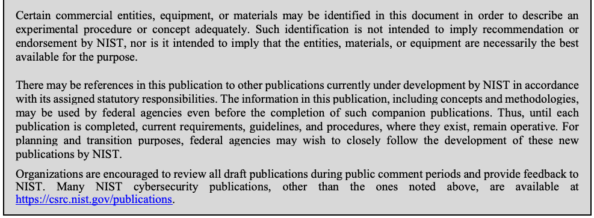
Comments on this publication may be submitted to: National Institute of Standards and Technology Attn: Computer Security Division, Information Technology Laboratory 100 Bureau Drive (Mail Stop 8930) Gaithersburg, MD 20899-8930 Email: sp800-205-comments@nist.gov
本書に関するコメントは以下に提出することができる：National Institute of Standards and Technology Attn: Computer Security Division, Information Technology Laboratory 100 Bureau Drive (Mail Stop 8930) Gaithersburg, MD 20899-8930 Email: sp800-205-comments@nist.gov
All comments are subject to release under the Freedom of Information Act (FOIA).
すべてのコメントは、情報自由法（FOIA）に基づき公開の対象となる。
Reports on Computer Systems Technology
コンピュータシステム技術に関する報告書
The Information Technology Laboratory (ITL) at the National Institute of Standards and Technology (NIST) promotes the U.S. economy and public welfare by providing technical leadership for the Nation’s measurement and standards infrastructure. ITL develops tests, test methods, reference data, proof of concept implementations, and technical analyses to advance the development and productive use of information technology. ITL’s responsibilities include the development of management, administrative, technical, and physical standards and guidelines for the cost-effective security and privacy of other than national security-related information in federal information systems. The Special Publication 800-series reports on ITL’s research, guidelines, and outreach efforts in information system security, and its collaborative activities with industry, government, and academic organizations.
国立標準技術研究所（NIST）の情報技術研究所（ITL）は、国の計測・標準インフラストラクチャに対する技術的リーダーシップを提供することにより、米国経済と公共の福祉の向上に貢献している。ITLは、情報技術の開発と生産的な利用を推進するため、試験、試験方法、参照データ、概念実証実装、および技術分析を開発する。ITLの責務には、連邦情報システムにおける国家安全保障関連以外の情報について、費用対効果の高いセキュリティとプライバシーを実現するための、管理面、事務面、技術面、物理面の標準および指針の策定が含まれる。Special Publication 800シリーズは、情報システムセキュリティに関するITLの研究、指針、啓発活動、ならびに産業界、政府、学術機関との共同活動を報告するものである。
Abstract
概要
This document provides federal agencies with a guide for implementing attributes in access control systems. Attributes enable a logical access control methodology where authorization to perform a set of operations is determined by evaluating attributes associated with the subject, object, requested operations, and, in some cases, environment conditions against policy, rules, or relationships that describe the allowable operations for a given set of attributes. This document outlines factors which influence attributes that an authoritative body must address when standardizing an attribute system and proposes some notional implementation suggestions for consideration.
本書は、アクセス制御システムに属性を実装するための指針を連邦機関に提供する。属性は、論理アクセス制御の方法論を可能にする。この方法論では、一連の操作を実行する認可が、サブジェクト、オブジェクト、要求された操作、場合によっては環境条件に関連する属性を、ある属性の集合に対して許容される操作を記述するポリシー、ルール、または関係と照らして評価することで決定される。本書は、属性体系を標準化する際に権限ある主体が取り組まなければならない、属性に影響する要因を概説し、検討のために概念的な実装案をいくつか示す。
Keywords
キーワード
access control; access control mechanism; access control model; access control policy; attribute considerations; attribute; assurance; attribute-based access control (ABAC); authorization; privilege.
アクセス制御；アクセス制御メカニズム；アクセス制御モデル；アクセス制御ポリシー；属性に関する検討事項；属性；保証；属性ベースアクセス制御（ABAC）；認可；権限。
Acknowledgements
謝辞
The authors, Vincent C. Hu, David F. Ferraiolo, and Rick Kuhn of the National Institute of Standards and Technology (NIST), wish to thank their colleague Isabel Van Wyk, who reviewed drafts of this document. Additionally, the authors would like to thank Mr. Art Friedman (NSA) and Mr. Paul Jacob (Booz Allen Hamilton, Linthicum, MD) for initiating this effort. The authors also gratefully acknowledge and appreciate the comments and contributions made by government agencies, private organizations, and individuals in providing direction and assistance in the development of this document.
米国国立標準技術研究所（NIST）の著者であるVincent C. Hu、David F. Ferraiolo、Rick Kuhnは、本書の草案をレビューした同僚のIsabel Van Wykに感謝する。また、本取組みを発案したArt Friedman氏（NSA）とPaul Jacob氏（Booz Allen Hamilton、メリーランド州Linthicum）にも謝意を表する。さらに、本書の作成にあたり、方向性の提示と支援をいただいた政府機関、民間組織、個人からの意見と貢献に対し、著者らは深く感謝する。
Patent Disclosure Notice
特許開示に関する通知
NOTICE: The Information Technology Laboratory (ITL) has requested that holders of patent claims whose use may be required for compliance with the guidance or requirements of this publication disclose such patent claims to ITL. However, holders of patents are not obligated to respond to ITL calls for patents and ITL has not undertaken a patent search in order to identify which, if any, patents may apply to this publication.
通知：情報技術研究所（ITL）は、本出版物のガイダンスまたは要件への準拠に使用が必要となる可能性のある特許クレームの保有者に対し、当該特許クレームをITLに開示するよう要請している。ただし、特許保有者はITLからの特許開示要求に応じる義務を負うものではなく、ITLは本出版物に適用される可能性のある特許（存在する場合）を特定するための特許調査を実施していない。
As of the date of publication and following call(s) for the identification of patent claims whose use may be required for compliance with the guidance or requirements of this publication, no such patent claims have been identified to ITL.
発行日現在、本出版物のガイダンスまたは要件への準拠に使用が必要となる可能性のある特許クレームの特定を求める呼びかけを行った後も、そのような特許クレームはITLに対して特定されていない。
No representation is made or implied by ITL that licenses are not required to avoid patent infringement in the use of this publication.
本出版物の使用において特許侵害を回避するためにライセンスが不要であるという表明は、明示的にも黙示的にも、ITLによって一切行われていない。
Executive Summary
エグゼクティブサマリー
Access control systems that use attributes are capable of enforcing a broad range of access control policies. Attributes enable precise access control and allow a large number of discrete inputs into an access control decision. They also provide an extensive set of possible combinations of those variables to reflect rules to express policies.
属性を使用するアクセス制御システムは、広範なアクセス制御ポリシーを実施することができる。属性によって精密なアクセス制御が可能になり、アクセス制御の決定に多数の個別の入力を取り入れることができる。また属性は、ポリシーを表現するためのルールを反映する、それらの変数の広範な組み合わせのセットも提供する。
Attribute-based access control systems rely upon attributes to not only define access control policy rules but also enforce the access control. Attributes need to be established, issued, stored, and managed under an authority. Attributes shared across organizations should provide assurance via location, retrieval, publication, validation, update, modification, security, and revocation capabilities. Consequently, all attributes must be established, defined, and constrained by allowable values required by the appropriate digital policies; successful deployment of the schema for these attributes and allowable attribute values must be completed to help enable subject (e.g., consumers) and object (e.g., protected resource/service) owners with policy and relationship development.
属性ベースのアクセス制御システムは、アクセス制御ポリシールールを定義するためだけでなく、アクセス制御を実施するためにも属性に依存している。属性は、ある権限主体の下で確立、発行、保存、および管理される必要がある。組織間で共有される属性は、所在特定、取得、公開、検証、更新、変更、セキュリティ、および失効の各機能を通じて保証を提供すべきである。したがって、すべての属性は、適切なデジタルポリシーによって要求される許容値によって確立、定義、および制約されなければならない。また、サブジェクト（例：利用者）およびオブジェクト（例：保護されたリソース／サービス）の所有者によるポリシーおよび関係の策定を支援できるよう、これらの属性および許容される属性値のスキーマの展開を成功裏に完了しなければならない。
Once attributes and their allowable values are established, methods for provisioning attributes and appropriate attribute values to subjects and objects within a framework for storing, retrieving, updating, or revoking attributes must also be established. In addition, interfaces and mechanisms must be developed or adopted to enable sharing of these attributes. Finally, to achieve the assurance of attributes, an Attribute Evaluation Scheme, which brings confidence based on the five principal areas of interest, needs to be established:
属性とその許容値が確立されたら、属性の保存、取得、更新、または失効のためのフレームワーク内で、サブジェクトおよびオブジェクトに属性と適切な属性値をプロビジョニングする方法も確立しなければならない。さらに、これらの属性の共有を可能にするためのインターフェースおよびメカニズムを開発または採用しなければならない。最後に、属性の保証を達成するために、次の5つの主要な関心領域に基づいて確信をもたらす属性評価スキーム（Attribute Evaluation Scheme）を確立する必要がある：
Preparation refers to the planning of an attribute creation and sharing mechanism, as well as rules for maintaining attributes’ privacy between attribute providers and access control functions. This consideration should be based on the business operation requirements to meet the goal of efficiency and confidentiality of operations.
準備（Preparation）とは、属性の作成および共有メカニズム、ならびに属性プロバイダーとアクセス制御機能の間で属性のプライバシーを維持するためのルールの計画を指す。この検討は、運用の効率性と機密性という目標を満たすために、業務運用要件に基づくべきである。
Veracity establishes the policy and technical underpinnings for semantic and syntactic correctness of subject, object attributes, or environment condition, and ensures that the obtained attributes are trustworthy based on the agreed upon or trusted definitions, protocols, measurements, and maintenance processes of attributes.
真実性（Veracity）は、サブジェクト属性、オブジェクト属性、または環境条件の意味的および構文的な正しさのためのポリシー上および技術上の基盤を確立し、属性について合意された、または信頼された定義、プロトコル、測定、および維持プロセスに基づいて、取得された属性が信頼できるものであることを確実にする。
Security considers different standards and protocols used for secure transmission and repositories of attributes between systems in order to avoid compromising the data integrity and confidentiality of the attributes or exposing vulnerabilities in attribute providers, access control functions, or other types of malicious actions performed by unauthorized entities.
セキュリティ（Security）は、属性のデータ完全性および機密性の侵害や、属性プロバイダー、アクセス制御機能における脆弱性の露出、または権限のないエンティティによって行われるその他の種類の悪意のある行為を回避するために、システム間での属性のセキュアな伝送およびリポジトリに使用されるさまざまな標準とプロトコルを検討する。
Readiness refers to the frequency of refresh for attributes that change. The system must ensure that attribute update and retrieval frequencies adequately support access control enforcement functions. This capability also ensures that a recent set of attributes required for appropriate access control for the protected objects in question is cached in the event that the most current attributes from authoritative sources or repositories cannot be accessed during an information system emergency (e.g., low bandwidth, loss of service). In addition, the fail over and backup capability of attribute repositories need to be considered.
準備状況（Readiness）は、変化する属性のリフレッシュ頻度を指す。システムは、属性の更新および取得の頻度がアクセス制御の執行機能を十分にサポートすることを確実にしなければならない。この能力はまた、情報システムの緊急事態（例：低帯域幅、サービスの喪失）の際に権威ある情報源またはリポジトリから最も新しい属性にアクセスできない場合に備えて、当該の保護対象オブジェクトに対する適切なアクセス制御に必要な直近の属性セットがキャッシュされていることを確実にする。さらに、属性リポジトリのフェイルオーバーおよびバックアップの能力についても検討する必要がある。
Management provides mechanisms for maintaining attributes to ensure the efficiency and consistent use of attributes, including metadata, hierarchical structures for attribute grouping, minimization and transformation methods for attribute performance, and additional support capabilities (e.g., attribute integration with authentication, logs for recording attribute access and updates).
管理（Management）は、属性の効率性および一貫した使用を確実にするために属性を維持するためのメカニズムを提供する。これには、メタデータ、属性グループ化のための階層構造、属性のパフォーマンスのための最小化および変換の方法、ならびに追加のサポート機能（例：属性と認証との統合、属性へのアクセスおよび更新を記録するためのログ）が含まれる。
NIST Special Publication (SP) 800-162, Guide to Attribute Based Access Control (ABAC) Definition and Considerations [1], introduced guidance on access control definitions and considerations for the implementation of access control systems but did not include detailed recommendations on considerations such as the preparation, veracity, security, readiness, and management of attributes. This document aims to provide federal agencies with a guide to attribute considerations with Attribute Evaluation Scheme examples for access control. The Attribute Evaluation Scheme should be determined by an enterprise information system’s requirements, and the enterprise information system should validate these requirements to realize the appropriate organizational attribute evaluation scheme capability in line with performance and cost recommendations. Note that this document does not establish a universal attribute scheme that suits all business capabilities and performance requirements; instead, it provides considerations and examples that can be adapted to meet the specific needs of an organization when defining its attribute evaluation scheme.
NIST Special Publication (SP) 800-162『Guide to Attribute Based Access Control (ABAC) Definition and Considerations』[1] は、アクセス制御システムの実装のためのアクセス制御の定義および検討事項に関するガイダンスを導入したが、属性の準備、真実性、セキュリティ、準備状況、管理といった検討事項に関する詳細な推奨事項は含んでいなかった。本書は、アクセス制御のための属性評価スキーム（Attribute Evaluation Scheme）の例を伴う、属性に関する検討事項のガイドを連邦機関に提供することを目的とする。属性評価スキームはエンタープライズ情報システムの要件によって決定されるべきであり、エンタープライズ情報システムは、パフォーマンスおよびコストに関する推奨事項に沿って適切な組織の属性評価スキーム能力を実現するために、これらの要件を検証すべきである。なお、本書は、すべてのビジネス能力およびパフォーマンス要件に適合する普遍的な属性スキームを確立するものではない。そうではなく、組織が自らの属性評価スキームを定義する際に、その固有のニーズを満たすよう適応させることができる検討事項および例を提供する。
Table of Contents
目次
List of Appendices
付録一覧
Appendix A—XACML Implementation of Table 10 and 11 — 30
付録A—表10および表11のXACML実装 — 30
Appendix B—References — 32
付録B—参考文献 — 32
List of Figures
図一覧
List of Tables
表一覧
1 Introduction
1 はじめに
1.1 Purpose
1.1 目的
Virtually all authorization systems are dependent on attributes for rendering access control decisions and ultimately enforcing policy over subject access requests to system objects.
実質的にすべての認可システムは、アクセス制御の決定を下し、最終的にシステムオブジェクトに対するサブジェクトのアクセス要求に対してポリシーを強制するために属性に依存している。
Perhaps the most deployed authorization scheme in use today is role-based access control (RBAC), where roles (e.g., manager, accounts receivable clerk, loan officer) provide a means of expressing a subject’s authority, responsibilities, or job functions. The process of assigning a role attribute value to a subject indirectly grants the subject permissions that are associated with the role. An emerging alternative to RBAC is to grant or deny subject requests to access system objects based on enterprise-specific attributes of subjects and objects and, optionally, environment conditions and policies that are expressed in terms of those attributes. This approach to access control is commonly referred to as attribute-based access control (ABAC). Subject names and groups, as applied in access control lists, are other examples of attributes used in formulating access policies and computing decisions.
今日使用されている認可スキームの中で恐らく最も広く導入されているのはロールベースアクセス制御（RBAC）であり、ロール（例：マネージャー、売掛金担当者、融資担当者）がサブジェクトの権限、責任、または職務を表現する手段を提供する。サブジェクトにロール属性値を割り当てるプロセスは、そのロールに関連付けられたパーミッションをサブジェクトに間接的に付与する。RBACに代わる新たな選択肢として登場しているのが、サブジェクトおよびオブジェクトのエンタープライズ固有の属性と、任意で環境条件、およびそれらの属性を用いて表現されるポリシーに基づいて、システムオブジェクトへのアクセスを求めるサブジェクトの要求を許可または拒否する方式である。アクセス制御に対するこのアプローチは、一般に属性ベースアクセス制御（ABAC）と呼ばれる。アクセス制御リストで適用されるサブジェクト名やグループは、アクセスポリシーの策定や決定の計算に使用される属性のその他の例である。
Access control systems typically encompass four layers of functional and information decomposition—enforcement, decision, access control data, and administration—involving several components that work together to bring about policy-preserving access. At its core is a policy decision point (PDP) that computes decisions to permit or deny subject requests to perform operations on system objects. A policy enforcement point (PEP) both issues requests and accepts PDP decisions that are based on the current state of the access control data, which comprises access control policies expressed in terms of attributes and attribute values. These values may, for example, pertain to the attributes of a subject seeking access and the attributes of a target object. Policies and attributes are managed through one or more Policy Administration Points.
アクセス制御システムは通常、機能的および情報的な分解の4つの層（強制、決定、アクセス制御データ、および管理）を包含しており、ポリシーを維持したアクセスを実現するために連携して動作する複数のコンポーネントが関与している。その中核となるのは、システムオブジェクトに対する操作の実行を求めるサブジェクトの要求を許可または拒否する決定を計算するポリシー決定ポイント（PDP）である。ポリシー強制ポイント（PEP）は、要求を発行するとともに、属性および属性値の観点から表現されたアクセス制御ポリシーで構成されるアクセス制御データの現在の状態に基づくPDPの決定を受け入れる。これらの値は、例えば、アクセスを求めるサブジェクトの属性やターゲットオブジェクトの属性に関連する場合がある。ポリシーおよび属性は、1つ以上のポリシー管理ポイントを通じて管理される。
Regardless of the type of authorization scheme being deployed, confidence in access control decisions is dependent on the accuracy, integrity, and timely availability of attributes. If a subject is inappropriately assigned an attribute value, whether through complacency, error, delay, or malice, the result is the same—an inappropriate access state.
配備されている認可方式のタイプに関係なく、アクセス制御決定に対する確信度は、属性の正確性、完全性、および適時の可用性に依存する。油断、エラー、遅延、あるいは悪意のいずれによるものであれ、サブジェクトに不適切に属性値が割り当てられた場合、その結果は同じであり、不適切なアクセス状態となる。
Over past decades, a variety of approaches have emerged for storing, managing, and applying attributes. One approach is to tightly couple policies and attributes with the PDP. Consider Next Generation Access Control (NGAC) [2], an ABAC standard where both policies and attributes are managed through policy-preserving configurations of a standard set of elements and relations that may reside in PDP memory. An eXtensible Access Control Markup Language (XACML) deployment may provide a more distributed approach. Policies are expressed as extensible markup language (XML) documents that are locally loaded into PDP memory from a policy retrieval point and evaluated with respect to attributes that are remotely retrieved from one or more policy information points. In another deployment, attributes are stored, managed, and shared (exchanged) across a multitude of relying parities, each with their own PDP and policy store.
過去数十年にわたり、属性の保存、管理、および適用に関してさまざまなアプローチが登場してきた。1つのアプローチは、ポリシーと属性をPDPと緊密に結合することである。Next Generation Access Control (NGAC) [2] を考えてみる。これは、PDPメモリ内に存在し得る標準的な要素と関係のポリシー保持構成を通じて、ポリシーと属性の両方が管理されるABAC標準である。eXtensible Access Control Markup Language (XACML) の配備は、より分散化されたアプローチを提供する可能性がある。ポリシーは拡張可能マークアップ言語 (XML) ドキュメントとして表現され、ポリシー取得ポイントからPDPメモリにローカルにロードされ、1つ以上のポリシー情報ポイントからリモートで取得された属性に関して評価される。別の配備では、それぞれ独自のPDPとポリシーストアを持つ多数の依拠当事者にわたって、属性が保存、管理、および共有（交換）される。
The approach used for storing, managing, and retrieving attributes is significant due to the relative risk factors involved. An authorization system with local attributes affords a closed protection boundary in which attributes never need to be exposed to the outside world. In a deployment where attributes are stored, managed, and retrieved from remote systems, attributes are susceptible to the management and protection strategies of those systems and to the networks that are used to transfer attributes.
属性の保存、管理、および取得に使用されるアプローチは、関連する相対的なリスク要因のために重要である。ローカル属性を持つ認可システムは、属性を外界に公開する必要がまったくない閉じた保護境界を提供する。属性がリモートシステムで保存および管理され、そこから取得される配備では、属性はそれらのシステムの管理および保護戦略、ならびに属性の転送に使用されるネットワークの影響を受けやすい。
Due to the variability of access control system types and deployments, this document generically focuses on attribute properties—preparation, veracity, security, readiness, and management— that should be considered for instilling confidence in the use of attributes in computing access control decisions and enforcing policy. This document outlines factors that influence attributes which an authoritative body must address when standardizing attribute evaluation systems and proposes some notional implementation suggestions for consideration.
アクセス制御システムのタイプや配備の多様性により、本文書は、アクセス制御決定の計算およびポリシーの強制における属性の使用に確信を持たせるために考慮すべき属性の特性（準備、真実性、セキュリティ、準備状況、および管理）に一般的な形で焦点を当てている。本文書は、権限のある組織が属性評価システムを標準化する際に対処しなければならない、属性に影響を与える要因を概説し、検討のための概念的な実装上の提案をいくつか提示する。
This document extends the information in 1) NIST Interagency or Internal Report (NISTIR) 8112, Attribute Metadata: A Proposed Schema for Evaluating Federated Attributes [3]; 2) NIST Special Publication (SP) 800-162, Guide to Attribute-Based Access Control (ABAC) Definition and Considerations [1], which defines ABAC’s terms and concepts and discusses considerations for ABAC implementation; 3) NISTIR 7316, Assessment of Access Control Systems [4], which demonstrates the fundamental concepts of policy, models, and mechanisms of access control systems; 4) NISTIR 7874, Guidelines for Access Control System Evaluation Metrics [5]; and 5) NIST SP 800-178, A Comparison of Attribute-Based Access Control (ABAC) Standards for Data Service Applications [6], which describes XACML and NGAC and then compares them with respect to five criteria.
本文書は、1) NIST Interagency or Internal Report (NISTIR) 8112『Attribute Metadata: A Proposed Schema for Evaluating Federated Attributes』[3]、2) ABACの用語と概念を定義し、ABAC実装に関する考慮事項を論じている NIST Special Publication (SP) 800-162『Guide to Attribute-Based Access Control (ABAC) Definition and Considerations』[1]、3) アクセス制御システムのポリシー、モデル、およびメカニズムの基本概念を示す NISTIR 7316『Assessment of Access Control Systems』[4]、4) NISTIR 7874『Guidelines for Access Control System Evaluation Metrics』[5]、および 5) XACMLとNGACを説明し、5つの基準に関してそれらを比較する NIST SP 800-178『A Comparison of Attribute-Based Access Control (ABAC) Standards for Data Service Applications』[6] の情報を拡張するものである。
Note that while not the focus, assumptions and dependencies on authentication of access control subjects are addressed.
焦点ではないものの、アクセス制御サブジェクトの認証に関する前提条件や依存関係についても取り上げられていることに留意されたい。
1.2 Scope
1.2 適用範囲
The intended audience for this document is an organizational entity implementing access control solutions where there is an expectation of sharing attributes with or accessing information from other organizations. This document does not prescribe internal attribute evaluation system standards that an organization may need in their enterprise systems or within a community other than the organization itself. Rather, the focus is on the establishment of confidence in attributes applied to an organization’s access control implementation.
本文書の想定読者は、他の組織との属性の共有または他の組織からの情報へのアクセスが期待されるアクセス制御ソリューションを実装する組織体である。本文書は、組織が自らのエンタープライズシステム内、または組織自体以外のコミュニティ内で必要とする可能性のある内部属性評価システムの標準を規定するものではない。むしろ、組織のアクセス制御実装に適用される属性に対する確信の確立に焦点を当てている。
1.3 Audience
1.3 対象読者
This document assumes that readers are familiar with access (authorization) control and have basic knowledge of operating systems, databases, networking, and security. Given the constantly changing nature of the information technology (IT) industry, readers are strongly encouraged to take advantage of other documents—including those listed in this document—for more current and detailed information.
本文書は、読者がアクセス（認可）制御に精通しており、オペレーティングシステム、データベース、ネットワーキング、およびセキュリティに関する基礎知識を有していることを前提としている。情報技術（IT）業界の絶えず変化する性質を考慮し、より最新かつ詳細な情報を得るために、読者が本文書に挙げられているものを含む他の文書を活用することを強く推奨する。
1.4 Document Structure
1.4 本書の構成
The sections and appendices presented in this document are as follows:
本文書で提示されるセクションおよび付録は以下のとおりである。
•Section 1 states the purpose and scope of attributes used for access control systems.
•セクション1では、アクセス制御システムに使用される属性の目的と範囲について述べる。
•Section 2 gives overviews of the basic abstractions of access control attributes: subject attribute, object attribute, and environment condition in a working environment.
•セクション2では、アクセス制御属性の基本的な抽象概念である、稼働環境におけるサブジェクト属性、オブジェクト属性、および環境条件の概要を説明する。
•Section 3 discusses the considerations for attributes from the perspectives of preparation, veracity, security, readiness, and management.
•セクション3では、準備、真実性、セキュリティ、準備状況、および管理の観点から、属性に関する考慮事項を議論する。
•Section 4 demonstrates a general attribute framework with an example for integrating and defining attributes to achieve the attribute veracity.
•セクション4では、属性の真実性を達成するために属性を統合および定義する例を用いて、一般的な属性フレームワークを実証する。
•Section 5 demonstrates the mapping of attribute considerations to the Attribute Evaluation Scheme with examples of different applications and explains the use of the Attribute Practice Statement.
•セクション5では、さまざまなアプリケーションの例を用いて、属性に関する考慮事項の属性評価スキーム（Attribute Evaluation Scheme）へのマッピングを実証し、属性実施規程（Attribute Practice Statement）の利用について説明する。
•The Appendix lists additional information on the XACML translation of the Office of Management and Budget (OMB) Memorandum M-07-16 privacy rule in a general attribute framework.
•付録には、一般的な属性フレームワークにおける行政管理予算局（OMB）覚書 M-07-16 プライバシー規則のXACML変換に関する追加情報を記載している。
2 Consideration Elements
2 検討要素
Access control systems using attributes can enforce a broad range of access control policies. Attributes—given by a name-value pair—contain characteristics of the subject, object, or environment conditions, thereby enabling precise control, allowing for a higher number of discrete inputs into an access control decision, and providing a larger set of possible combinations of those variables to reflect a wider and more definitive set of possible rules to express policies. In addition to the earlier work documented in NIST Special Publication 800-162 [1] and OMB M-04-04 [7], which suggested attribute implementations applied to the subject and object and environment conditions within an ABAC system, general attribute considerations need to be addressed based on the following definitions.
属性を使用するアクセス制御システムは、広範なアクセス制御ポリシーを強制できる。属性は名前と値のペアとして与えられ、サブジェクト、オブジェクト、または環境条件の特性を含む。これにより、精密な制御が可能になり、アクセス制御決定へのより多数の個別の入力が可能になり、それらの変数の可能な組み合わせのより大きな集合が提供されて、ポリシーを表現するためのより広範でより明確な可能なルールの集合を反映できるようになる。ABACシステム内のサブジェクト、オブジェクト、および環境条件に適用される属性の実装を示唆した、NIST Special Publication 800-162 [1] および OMB M-04-04 [7] に文書化されている以前の成果に加えて、以下の定義に基づいて一般的な属性の考慮事項に対処する必要がある。
Access Control Functions are functions for an AC mechanism or scheme. For example, the Extensible Access Control Markup Language (XACML) [6] scheme architecture includes functions such as Policy Decision Points (PDPs), Policy Enforcement Points (PEPs), Policy Administration Points (PAPs), and Policy Information Points (PIPs) as defined in International Organization for Standardization/International Electrotechnical Commission (ISO/IEC) 29146:2016, along with some logical components for handling the context or workflow of policy and attribute retrieval and assessment. Access control functions hosted in local or network systems (called local or remote access control function, respectively) must function together to provide access control decisions and policy enforcement.
アクセス制御機能とは、ACメカニズムまたはスキームのための機能である。例えば、Extensible Access Control Markup Language（XACML）[6] スキームアーキテクチャには、国際標準化機構/国際電気標準会議（ISO/IEC）29146:2016 で定義されているポリシー決定ポイント（PDP）、ポリシー強制ポイント（PEP）、ポリシー管理ポイント（PAP）、ポリシー情報ポイント（PIP）などの機能と、ポリシーおよび属性の取得と評価のコンテキストやワークフローを処理するためのいくつかの論理コンポーネントが含まれる。ローカルシステムまたはネットワークシステムにホストされているアクセス制御機能（それぞれローカルアクセス制御機能またはリモートアクセス制御機能と呼ばれる）は、アクセス制御決定とポリシーの強制を提供するために連携して機能しなければならない。
An Attribute Provider is any person or system that provides subject, object (or resource), or environmental condition attributes to access control functions or other attribute providers (in such cases, the attribute provider is called a remote attribute provider), regardless of transmission method. An attribute provider may be the original authoritative source or act as an intermediary between the authoritative source and the access control function by receiving information from an authoritative source and then re-packaging the attributes for delivery/routing to storage repositories of access control function or attribute provider. Attribute values may be human-generated (e.g., an employee database), derived from formulas (e.g., a credit score), or system-generated (e.g. environment conditions such as time, location, etc.).
属性プロバイダとは、送信方法にかかわらず、アクセス制御機能または他の属性プロバイダ（このような場合、属性プロバイダはリモート属性プロバイダと呼ばれる）にサブジェクト、オブジェクト（またはリソース）、もしくは環境条件の属性を提供する任意の人物またはシステムである。属性プロバイダは、元の権威ある情報源（authoritative source）である場合もあれば、権威ある情報源から情報を受信し、アクセス制御機能または属性プロバイダのストレージリポジトリへの配信/ルーティングのために属性を再パッケージ化することによって、権威ある情報源とアクセス制御機能の間の仲介者として機能する場合もある。属性値には、人間によって生成されるもの（例：従業員データベース）、計算式から導出されるもの（例：信用スコア）、またはシステムによって生成されるもの（例：時間や場所などの環境条件）がある。
Regardless of the source of attributes, an access control function should ensure that the attributes associated with the subject, object, or environment condition to which they apply are secure and error-free to the best of its ability. Attribute proofing by the defined scheme from which organizations can make risk-based decisions is based on the confidence in attributes supplied by an access control function, attribute provider, or local attribute resource. Figure 1 illustrates the scope of attributes used, including authentication, authorization, and attribute proofing. Note that the remote attributes are those provisioned through remote networks.
属性の出所にかかわらず、アクセス制御機能は、適用対象となるサブジェクト、オブジェクト、または環境条件に関連付けられた属性が安全であり、誤りがないことを、その能力の及ぶ限り最大限に確保すべきである。組織がリスクに基づく決定を下すための定義されたスキームによる属性プルーフィングは、アクセス制御機能、属性プロバイダ、またはローカル属性リソースから提供される属性に対する信頼に基づいている。図1は、認証、認可、および属性プルーフィングを含む、使用される属性の範囲を示している。なお、リモート属性とは、リモートネットワークを通じてプロビジョニングされる属性であることに留意されたい。
![Figure 1: Scopes of attributes used: Authorization, Authentication, and Attribute Proofing of an access control system. Nested dashed regions. The outer black region is labeled "Attribute used". At its top, a dashed ellipse "Local attributes" points to a box "Local access control functions", from which a thick arrow labeled "Attributes from local (trusted) network" points down to a box "Access control functions or AC mechanism". That box lies in a purple dashed region labeled "Authorization" and also in a green dashed region labeled "Attribute Proofing". The green region also contains a red dashed region labeled "Authentication", holding a box "Attribute provider or remote access control functions", a box "Remote attribute provider" and two dashed ellipses "Remote attributes". Each Remote attributes ellipse has an arrow labeled "Attributes from remote network" up to the box above it (the left to the attribute provider, the right to the remote attribute provider). The remote attribute provider points to the attribute provider with an arrow labeled "Attributes from remote network", and a thick arrow labeled "Attributes from remote network" runs from the attribute provider up to the Access control functions or AC mechanism box.](assets/205/p0014-figure-01.png)
図1：使用される属性の範囲：アクセス制御システムの認可、認証、および属性プルーフィング。入れ子になった破線の領域からなる図である。外側の黒い領域には「Attribute used」（使用される属性）とある。その上部で、破線の楕円「Local attributes」（ローカル属性）が箱「Local access control functions」（ローカルのアクセス制御機能）を指し、そこから「Attributes from local (trusted) network」（ローカル（信頼できる）ネットワークからの属性）と記した太い矢印が下の箱「Access control functions or AC mechanism」（アクセス制御機能またはAC機構）を指す。この箱は「Authorization」（認可）と記した紫の破線の領域の中にあり、同時に「Attribute Proofing」（属性プルーフィング）と記した緑の破線の領域の中にもある。緑の領域には「Authentication」（認証）と記した赤の破線の領域もあり、箱「Attribute provider or remote access control functions」（属性プロバイダーまたはリモートのアクセス制御機能）、箱「Remote attribute provider」（リモート属性プロバイダー）、2つの破線の楕円「Remote attributes」（リモート属性）を含む。各Remote attributesの楕円から、その上の箱（左は属性プロバイダー、右はリモート属性プロバイダー）へ「Attributes from remote network」（リモートネットワークからの属性）と記した矢印が向かう。リモート属性プロバイダーから属性プロバイダーへ「Attributes from remote network」と記した矢印が向かい、属性プロバイダーからAccess control functions or AC mechanismの箱へ「Attributes from remote network」と記した太い矢印が上向きに延びる。
Figure 1: Scopes of attributes used: Authorization, Authentication, and Attribute Proofing of an access control system
図1：使用される属性の範囲：アクセス制御システムの認可、認証、および属性プルーフィング
3 Attribute Considerations
3 属性に関する考慮事項
Access control relies upon the evaluation of attributes to not only define access control policy rules, but also enforce the rules. Good, reliable, and up-to-date attribute data that support appropriate, well-informed access decisions are essential. Thus, attributes provided by an access control function or attribute provider need to be assured through an attribute proofing mechanism. Attributes must identify, define, and describe a set of criteria and standards that can be used to determine the attributes that are used for access decisions. Once the authoritative sources define the appropriate attributes and allowable values, methods need to be established to provision appropriate attribute values to subjects and objects with a framework for communicating, storing, retrieving, updating, or revoking attributes. In addition, interfaces and mechanisms must be developed or adopted to enable the sharing of these attributes. Finally, an attribute evaluation scheme needs to be established to bring confidence based on the five principal areas of interest: Preparation refers to the planning of the attribute creation and sharing mechanism as well as rules for maintaining attribute privacy between attribute providers and access control functions. This consideration should be based on the business operation requirements to meet the goals of efficiency and confidentiality of operations.
アクセス制御は、アクセス制御ポリシールールを定義するだけでなく、ルールを強制するためにも属性の評価に依存している。適切で十分な情報に基づいたアクセス決定をサポートする、良好で信頼性が高く、最新の属性データが不可欠である。したがって、アクセス制御機能または属性プロバイダによって提供される属性は、属性プルーフィングメカニズムを通じて保証される必要がある。属性は、アクセス決定に使用される属性を決定するために使用できる一連の基準および標準を特定、定義、記述しなければならない。権威ある情報源が適切な属性と許容値を定義したら、属性の通信、保存、取得、更新、または失効のためのフレームワークとともに、サブジェクトおよびオブジェクトに適切な属性値をプロビジョニングする方法を確立する必要がある。さらに、これらの属性の共有を可能にするためのインターフェースおよびメカニズムを開発または採用しなければならない。最後に、主要な5つの関心領域に基づいて確信をもたらす属性評価スキームを確立する必要がある。準備（Preparation）とは、属性の作成および共有メカニズムの計画、ならびに属性プロバイダとアクセス制御機能の間で属性のプライバシーを維持するためのルールを指す。この考慮事項は、運用の効率性と機密性の目標を満たすための業務運用要件に基づくべきである。
Veracity establishes the policy and technical underpinnings for semantic and syntactic correctness of subject, object attributes, or environment condition and ensures that the obtained attribute values are trustworthy based on the agreed upon or trusted definitions, protocols, measurements, and maintenance processes of attributes.
真実性（Veracity）は、サブジェクト、オブジェクトの属性、または環境条件の意味的および構文的正確性のためのポリシーと技術的基盤を確立し、合意されたまたは信頼できる属性の定義、プロトコル、測定、および保守プロセスに基づいて、取得された属性値が信頼できるものであることを保証する。
Security considers different standards and protocols used for secure transmission and repositories of attributes between systems in order to avoid compromising the data integrity and confidentiality of the attributes; exposing vulnerabilities in attribute providers, access control functions, or entities; or other types of malicious actions performed by unauthorized entities.
セキュリティ（Security）は、属性のデータ完全性および機密性を損なうこと、属性プロバイダー、アクセス制御機能、またはエンティティの脆弱性を露呈させること、あるいは権限のないエンティティによって行われるその他の種類の悪意ある行為を回避するために、システム間での属性の安全な伝送およびリポジトリに使用されるさまざまな標準およびプロトコルを考慮する。
Readiness refers to the frequency of refresh for attributes that change. The system must ensure that attribute update and retrieval frequencies adequately support access control enforcement functions. This capability also ensures that a recent set of attributes required for appropriate access control for the protected resource in question is cached in the event that the most updated attributes from authoritative sources or repositories cannot be accessed during an information system emergency (e.g., low bandwidth, loss of service). In addition, the fail-over and backup capabilities of attribute repositories need to be considered.
準備態勢（Readiness）は、変化する属性のリフレッシュ頻度を指す。システムは、属性の更新および取得の頻度がアクセス制御の強制機能を適切にサポートすることを保証しなければならない。また、この機能は、情報システムの緊急事態（例：低帯域幅、サービスの喪失）の際に、権威ある情報源またはリポジトリからの最新の属性にアクセスできない場合に備えて、対象となる保護リソースに対する適切なアクセス制御に必要な直近の属性セットがキャッシュされることも保証する。さらに、属性リポジトリのフェイルオーバー機能およびバックアップ機能を考慮する必要がある。
Management provides mechanisms for maintaining attributes to ensure the efficiency and consistent use of attributes including metadata, hierarchical structures for attribute grouping, minimization and transformation methods for attribute performance, and additional support capabilities (e.g., attribute integration with authentication, logs for recording attribute access and updates).
管理（Management）は、メタデータ、属性グループ化のための階層構造、属性パフォーマンスのための最小化および変換方法、ならびに追加のサポート機能（例：認証との属性統合、属性のアクセスおよび更新を記録するためのログ）を含む、属性の効率的かつ一貫した使用を保証するための属性維持メカニズムを提供する。
3.1 Preparation Consideration
3.1 準備に関する考慮事項
Attributes shared across organizations should be assured for all uses, including attributes that are located, retrieved, published, validated, updated, modified, secured, and revoked. Consequently, all attributes must be defined and constrained by allowable values required by the appropriate policies. The schema for these attributes and allowable attribute values must be published to all participants for use in rule and relationship development. Attributes may be created and shared by multiple organizations. Therefore, the design of an attribute framework must consider the federated usage, creation mechanism, and maintenance scheme according to the business and access control requirements. Attribute providers and access control functions also need to maintain privacy to meet the confidentiality requirement. Minimizing the number of attribute sources used in authorization decisions may improve performance and simplify the overall security management of the access control solution. In addition, organizations planning to deploy an access control solution may benefit from establishing a close working relationship among all of the organization’s stakeholders who will be involved in the attribute preparations.
組織間で共有される属性は、所在特定、取得、公開、検証、更新、変更、保護、および失効される属性を含め、あらゆる用途に対して保証されるべきである。したがって、すべての属性は、適切なポリシーによって要求される許容値によって定義および制約されなければならない。これらの属性および許容される属性値のスキーマは、ルールおよび関係性の開発で使用できるように、すべての参加者に公開されなければならない。属性は複数の組織によって作成および共有される場合がある。したがって、属性フレームワークの設計では、ビジネスおよびアクセス制御の要件に従って、フェデレーション利用、作成メカニズム、および保守スキームを考慮しなければならない。属性プロバイダおよびアクセス制御機能も、機密性要件を満たすためにプライバシーを維持する必要がある。認可決定に使用される属性ソースの数を最小限に抑えることで、パフォーマンスが向上し、アクセス制御ソリューションの全体的なセキュリティ管理が簡素化される可能性がある。さらに、アクセス制御ソリューションの導入を計画している組織は、属性の準備に関与する組織のすべてのステークホルダー間で緊密な協力関係を構築することで利益を得られる可能性がある。
3.1.1 Subject Attribute Preparation
3.1.1 サブジェクト属性の準備
Attribute authorities typically provision subject attributes for the type of attribute provided and managed through an access control function or attribute provider, except for non-person entities (NPE) such as autonomous services or applications generated or controlled by operating systems. There are typically multiple authorities, each with authority over different subject attributes. For example, security might be the authority for clearance attributes, while human resources might be the authority for name attributes. Subject attributes that require assured information sharing to allow subjects from one organization to access objects in another organization must be consistent, comparable, or mapped to allow equivalent policies to be enforced. For example, a member of organization A with the role Job Lead wants to access information in organization B, except organization B uses the term Task Lead to denote the equivalent role. Table 1 shows an example of a subject’s attributes.
オペレーティングシステムによって生成または制御される自律サービスやアプリケーションなどの非人間エンティティ（NPE）を除き、属性オーソリティは通常、アクセス制御機能または属性プロバイダを通じて提供および管理されるタイプの属性についてサブジェクト属性をプロビジョニングする。通常、複数のオーソリティが存在し、それぞれが異なるサブジェクト属性に対する権限を有している。例えば、セキュリティ部門がクリアランス属性のオーソリティであり、人事部門が氏名属性のオーソリティである場合がある。ある組織のサブジェクトが別の組織のオブジェクトにアクセスできるようにするために保証された情報共有を必要とするサブジェクト属性は、同等のポリシーの強制を可能にするために、一貫性があるか、比較可能であるか、あるいはマッピングされていなければならない。例えば、組織Aのメンバーで「Job Lead」のロールを持つ者が組織Bの情報へのアクセスを望んでいるが、組織Bでは同等のロールを表すのに「Task Lead」という用語を使用している、といった場合である。表1に、サブジェクトの属性の例を示す。
Table 1: Subject attribute example
表1: サブジェクト属性の例
| Subject attribute Name | Attribute Value | Policy Applieda |
| Company ID | ID numbers (e.g., Organization A) | Subject and Administrator object access |
| Division | Division name (e.g., Software Development Division) | Subject and Administrator object access |
| Group | Group name (e.g., Testing group) | Subject and Administrator object access |
| Name | Person’s name (e.g., Joe Smith) | Subject and Administrator object access |
| Authorization | Authorization level (e.g., 1) | Administrator object access |
| Role | Role ID (e.g., Job Lead, (or Task lead)) | Administrator object access |
| Training ID | Training label (e.g., Minimum Requirement) | Administrator object access |
原本PDFの抜粋画像
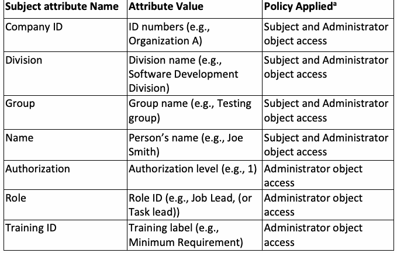
| サブジェクト属性名 | 属性値 | 適用ポリシーa |
| 会社ID | ID番号（例：組織A） | サブジェクトおよび管理者のオブジェクトアクセス |
| 部門 | 部門名（例：ソフトウェア開発部門） | サブジェクトおよび管理者のオブジェクトアクセス |
| グループ | グループ名（例：テストグループ） | サブジェクトおよび管理者のオブジェクトアクセス |
| 氏名 | 個人の氏名（例：Joe Smith） | サブジェクトおよび管理者のオブジェクトアクセス |
| 認可 | 認可レベル（例：1） | 管理者のオブジェクトアクセス |
| ロール | ロールID（例：Job Lead、（またはTask lead）） | 管理者のオブジェクトアクセス |
| トレーニングID | トレーニングラベル（例：最低要件） | 管理者のオブジェクトアクセス |
a Policy Applied column lists the type of policy rules which require this attribute for the evaluations of access permission if multiple policies are applied to the access control system.
a 「適用ポリシー」列は、アクセス制御システムに複数のポリシーが適用されている場合に、アクセス許可の評価のためにこの属性を必要とするポリシールールのタイプを記載している。
As subject attributes may be provisioned by different authorities (e.g., human resources, security, organization leadership, etc.), methods for obtaining authoritative data must be regulated. For example, only security authorities should be able to provision and assert clearance attributes and attribute values based on authoritative personnel clearance information; an individual should not be able to alter his or her own clearance attribute value. Other subject attributes may involve the subject’s current tasking, physical location, and the device from which a request is sent. Processes need to be developed to assess and assure the quality of such subject attribute data.
サブジェクト属性は異なるオーソリティ（例：人事、セキュリティ、組織のリーダーシップなど）によってプロビジョニングされる場合があるため、権威あるデータを取得する方法を統制しなければならない。例えば、権威ある人事クリアランス情報に基づいてクリアランス属性および属性値をプロビジョニングし表明できるのはセキュリティオーソリティのみであるべきであり、個人が自分自身のクリアランス属性値を変更できるべきではない。その他のサブジェクト属性には、サブジェクトの現在のタスク、物理的な位置、およびリクエストの送信元であるデバイスなどが含まれる場合がある。このようなサブジェクト属性データの品質を評価し保証するためのプロセスを策定する必要がある。
In addition, authoritative subject attribute provisioning capabilities should be appropriately dependable for privacy and service expectations. These expectations may be detailed in an Attribute Practice Statement (APS), which provides a listing of the attributes that will be used and may identify authoritative attribute sources throughout the organization. Still, additional network infrastructure capabilities are required to share and replicate authoritative subject attribute data within and across attribute providers and access control functions.
さらに、権威あるサブジェクト属性プロビジョニング機能は、プライバシーおよびサービスに対する期待に応えられるよう、適切に信頼できるものであるべきである。これらの期待事項はAttribute Practice Statement（APS）に詳述される場合があり、同文書は使用される属性の一覧を提供し、組織全体の権威ある属性ソースを特定することがある。それでもなお、属性プロバイダーおよびアクセス制御機能の内部および相互間で権威あるサブジェクト属性データを共有および複製するには、追加のネットワークインフラストラクチャ機能が必要とされる。
3.1.2 Object Attribute Preparation
3.1.2 オブジェクト属性の準備
The data or resource owner/custodian of access control function or attribute provider typically provisions object attributes upon object creation. For example, object attributes may be bound to the object or externally stored and referenced via a metadata service and repository. While it may not be necessary to have a common set of object attributes in use across the enterprise, object attributes must be consistently employed within an individual system to fulfill access control policy requirements, and available sets of object attributes should be published for those wishing to mark, tag, or otherwise apply object attributes to their objects. At times, it might be necessary to ensure that object attribute data are not tampered with or altered (i.e., remain static) to satisfy an access request. Table 2 shows an example of an object’s attributes.
アクセス制御機能または属性プロバイダーのデータまたはリソースの所有者／管理者は、通常、オブジェクトの作成時にオブジェクト属性をプロビジョニングする。例えば、オブジェクト属性は、オブジェクトにバインドされる場合もあれば、外部に保存され、メタデータサービスおよびリポジトリを介して参照される場合もある。エンタープライズ全体で共通のオブジェクト属性セットを使用する必要はないかもしれないが、アクセス制御ポリシーの要件を満たすためには、個々のシステム内でオブジェクト属性が一貫して用いられなければならず、また、自らのオブジェクトにオブジェクト属性をマーキング、タグ付け、またはその他の方法で適用することを望む者のために、利用可能なオブジェクト属性のセットが公開されるべきである。アクセス要求を満たすために、オブジェクト属性データが改ざんまたは変更されないこと（すなわち、静的なままであること）を確実にする必要が生じる場合もある。表2にオブジェクトの属性の例を示す。
Table 2: Object attribute example
表2：オブジェクト属性の例
| Object attribute Name | Attribute Value | Policy Applieda |
| Object ID | ID numbers (e.g., 234567) | Subject and Administrator object access |
| Object owner | Name of object owner or organization (e.g., Organization B) | Subject and Administrator object access |
| Object creation date and time | Date and time (e.g., May 26, 2015) | Subject and Administrator object access |
| Object deletion date and time | Date and time (e.g., May 26, 2017) | Subject and Administrator object access |
| Authorization | Authorization level (e.g., 1) | Administrator object access |
| Limited access ID | ID label (e.g., Public) | Administrator object access |
原本PDFの抜粋画像
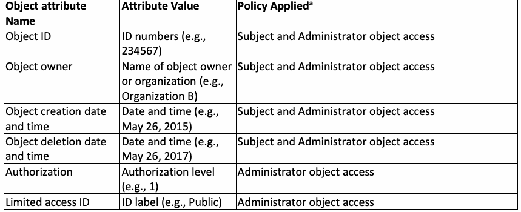
| オブジェクト属性名 | 属性値 | 適用ポリシーa |
| オブジェクトID | ID番号（例：234567） | サブジェクトおよび管理者によるオブジェクトアクセス |
| オブジェクト所有者 | オブジェクト所有者または組織の名称（例：組織B） | サブジェクトおよび管理者によるオブジェクトアクセス |
| オブジェクト作成日時 | 日時（例：2015年5月26日） | サブジェクトおよび管理者によるオブジェクトアクセス |
| オブジェクト削除日時 | 日時（例：2017年5月26日） | サブジェクトおよび管理者によるオブジェクトアクセス |
| 認可 | 認可レベル（例：1） | 管理者によるオブジェクトアクセス |
| 限定アクセスID | IDラベル（例：Public） | 管理者によるオブジェクトアクセス |
a Policy Applied column lists the type of policies which require this attribute for the evaluations of access permission if multiple policies are applied to the access control system.
a 「適用ポリシー」列には、アクセス制御システムに複数のポリシーが適用されている場合に、アクセス許可の評価のためにこの属性を必要とするポリシーの種類を記載している。
Access control authorities may not be able to appropriately and closely monitor all events. Frequently, object information is driven by non-security processes and requirements according to business cases for the consumer clientele in question. Measures must therefore be taken to ensure that object attributes are assigned and validated by processes that the object owner or administrator considers appropriate and authoritative for the application. For example, object attributes must not be modifiable by the subject to manipulate the outcome of the access control decision. Objects can be cryptographically bound to their attributes to identify whether objects or their corresponding attributes have been inappropriately modified. Mechanisms must be deployed to ensure that all objects created are assigned the appropriate set of object attributes to satisfy the policy used. It may be necessary to have an Enterprise Object Attribute Manager to coordinate these requirements. Object attributes must be made available for retrieval for access control decisions. Additional considerations for creating object attributes include:
アクセス制御オーソリティは、すべてのイベントを適切かつ綿密に監視できるとは限らない。多くの場合、オブジェクト情報は、対象となる消費者顧客向けのビジネスケースに応じた、セキュリティ以外のプロセスおよび要件によって左右される。したがって、オブジェクトの所有者または管理者がそのアプリケーションにとって適切かつ権威あるものとみなすプロセスによって、オブジェクト属性が割り当てられ、検証されることを確実にするための措置を講じなければならない。例えば、オブジェクト属性は、アクセス制御の決定の結果を操作する目的でサブジェクトが変更できるものであってはならない。オブジェクトまたはそれに対応する属性が不適切に変更されたかどうかを識別するために、オブジェクトをその属性に暗号論的にバインドすることができる。作成されるすべてのオブジェクトに、使用されるポリシーを満たす適切なオブジェクト属性のセットが割り当てられることを確実にするためのメカニズムを導入しなければならない。これらの要件を調整するために、Enterprise Object Attribute Manager（エンタープライズオブジェクト属性マネージャー）を置く必要が生じる場合がある。オブジェクト属性は、アクセス制御の決定のために取得できるよう利用可能にしなければならない。オブジェクト属性を作成する際のその他の検討事項には、以下が含まれる。
•In general, subjects may not know the values of an object attribute (e.g., what the security level is or who can access the object). Data confidentiality of object attributes should be accounted for so that authorized subjects only see the values that are applicable to them.
•一般に、サブジェクトはオブジェクト属性の値（例えば、セキュリティレベルが何であるか、誰がそのオブジェクトにアクセスできるか）を知らない場合がある。認可されたサブジェクトが自身に該当する値のみを見られるよう、オブジェクト属性のデータ機密性を考慮すべきである。
•As with subject attributes, a schema is required for object attributes defining attribute names and allowed values to ensure object attributes are valid within its semantics and syntax definitions.
•サブジェクト属性と同様に、オブジェクト属性がその意味論および構文の定義の範囲内で有効であることを確実にするために、属性名と許容値を定義するスキーマがオブジェクト属性にも必要である。
•Attribute values need to remain consistent within policies that share the attributes.
•属性値は、その属性を共有するポリシーの中で一貫性を保つ必要がある。
There have been numerous efforts within the Federal Government and commercial industry to create object attribute tagging tools that provide not only data tagging, but also cryptographic binding of the attributes to the object. These capabilities also provide validation of the object attribute fields to satisfy access control decision requirements. For example, Global Federated Identity Privilege Management (GFIPM) [8] specification provides the attribute data model for subjects, and the National Identity Exchange Federation (NIEF) [9] specification provides a collection of attribute definitions developed with the intent to enable organizations to exchange attribute data.
連邦政府内および民間業界内では、データタギングだけでなく、オブジェクトへの属性の暗号論的バインディングも提供するオブジェクト属性タギングツールを作成するための数多くの取り組みが行われてきた。これらの機能は、アクセス制御の決定要件を満たすためのオブジェクト属性フィールドの検証も提供する。例えば、Global Federated Identity Privilege Management（GFIPM）[8] 仕様はサブジェクトの属性データモデルを提供し、National Identity Exchange Federation（NIEF）[9] 仕様は、組織が属性データを交換できるようにすることを意図して開発された属性定義のコレクションを提供する。
3.1.3 Attribute Granularity
3.1.3 属性の粒度
For an access control mechanism to support the principle of least privilege, constraints must be placed on the attributes that are associated with a subject to further reduce the permissible capabilities. The organization-specific least privilege policy is described by specifying the access control rules, and the access control systems provide various specifying methods which achieve different degrees of granularity, flexibility, scope, and different groupings of the controlled objects for the least privilege policies. This involves the granularity of object attributes (e.g., data field) that an access control system can control. For example, this feature enables privacy control for information with different classifications in the data fields of a record. In addition, some access control systems are required to control or manage end-point system components such as servers, workstations, routers, switches, guards, mobile devices, firewalls, email, antiviruses, databases, and web applications. Thus, it is important to consider the granularity of attributes based on the organization’s requirements and system architecture.
アクセス制御メカニズムが最小特権の原則をサポートするためには、許容されるケーパビリティをさらに削減するように、サブジェクトに関連付けられた属性に制約を課す必要がある。組織固有の最小特権ポリシーはアクセス制御ルールを指定することによって記述され、アクセス制御システムは、最小特権ポリシーに対して様々な程度の粒度、柔軟性、スコープ、および制御対象オブジェクトの様々なグループ化を実現する多様な指定方法を提供する。これには、アクセス制御システムが制御できるオブジェクト属性（データフィールドなど）の粒度が関与する。例えば、この機能により、レコードのデータフィールドに含まれる異なる機密区分の情報に対するプライバシー制御が可能となる。さらに、一部のアクセス制御システムは、サーバー、ワークステーション、ルーター、スイッチ、ガード、モバイルデバイス、ファイアウォール、電子メール、ウイルス対策ソフト、データベース、Webアプリケーションなどのエンドポイントシステムコンポーネントを制御または管理することが求められる。したがって、組織の要件およびシステムアーキテクチャに基づいて属性の粒度を検討することが重要である。
3.1.4 Environment Condition Preparation
3.1.4 環境条件の準備
Environment condition refers to context information that is generally not associated with any specific subject or object but is required in the decision process. Environment conditions are different from subject and object attributes in that they are not administratively created and managed prior to run-time but, rather, are intrinsic and must be detectable by the access control function for use in access decisions. The access control function evaluates environment conditions such as the current date, time, location, threat, and system status against current matching environment variables when authorizing an access request. Environment conditions drive access control policies to specify exceptional or dynamic rules that supersede those rules driven only by subject or object attributes. When composing access control rules with environment conditions, it is important to ensure that the environment condition variables and their values are globally accessible, tamper-proof, and relevant to the environments in which they are used.
環境条件とは、一般に特定のサブジェクトやオブジェクトには関連付けられていないものの、決定プロセスにおいて必要とされるコンテキスト情報を指す。環境条件は、実行前に管理的に作成および管理されるのではなく、本質的なものであり、アクセス決定に使用するためにアクセス制御機能によって検出可能でなければならないという点で、サブジェクト属性やオブジェクト属性とは異なる。アクセス制御機能は、アクセス要求を認可する際、現在の日付、時刻、場所、脅威、システムステータスなどの環境条件を、現在の一致する環境変数と照合して評価する。環境条件は、サブジェクト属性またはオブジェクト属性のみによって駆動されるルールよりも優先される例外的なルールまたは動的なルールを指定するようにアクセス制御ポリシーを導く。環境条件を用いてアクセス制御ルールを構成する際は、環境条件変数とその値がグローバルにアクセス可能であり、改ざん防止されており、それらが使用される環境に関連していることを確認することが重要である。
3.1.5 Consideration Examples
3.1.5 検討事項の例
Table 3 shows example criteria of attribute preparation considerations.
表3は、属性準備の検討基準の例を示している。
Table 3: Example considerations for attribute preparation criteria
表3：属性準備基準の検討事項の例
| Consideration | Criteria | Applied Attributes |
| Attribute Coverage | Attributes cover all protection policy requirements of the organization (i.e., semantically complete). | Subject, Object |
| Attribute Governance | Attributes are under central or unified governance. | Subject, Object, Environment condition |
| Attribute Granularity | Attributes are based on the organization’s security and operation requirements. | Object |
原本PDFの抜粋画像
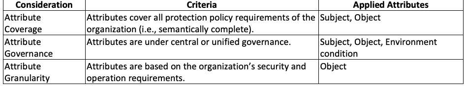
| 検討事項 | 基準 | 適用される属性 |
| 属性のカバレッジ | 属性が組織のすべての保護ポリシー要件を網羅している（すなわち、意味論的に完全である）。 | サブジェクト、オブジェクト |
| 属性のガバナンス | 属性が一元的または統一されたガバナンスの下にある。 | サブジェクト、オブジェクト、環境条件 |
| 属性の粒度 | 属性が組織のセキュリティ要件および運用要件に基づいている。 | オブジェクト |
3.2 Veracity Consideration
3.2 真実性の検討事項
With the exception of NPE, the veracity of an asserted attribute is affected by the care that the access control function or attribute provider takes in obtaining, evaluating, and maintaining the value while in possession of it. Two characteristics that influence veracity include:
NPEを除き、表明された属性の真実性は、アクセス制御機能または属性プロバイダーが、その値を取得し、評価し、保有している間維持する際に払う注意によって影響を受ける。真実性に影響を与える2つの特性には以下が含まれる：
•Attribute trustworthiness
•属性の信頼性
•Attribute accuracy
•属性の正確性
3.2.1 Attribute Trustworthiness
3.2.1 属性の信頼性
Attribute trustworthiness considers how well the sources of attributes are authenticated, identified, and validated. This applies to the attribute source from the remote attribute provider or access control function. There is a distinction between truthfulness of the attribute’s value and authoritativeness of information. However, the focus must be on access control function or attribute provider’s trust (e.g., credentials, federation relations) that the attributes represent the underlying subject, object, or environment condition. For example, the attribute value of a specific credit score may be disagreeable, but the attribute user may trust that it came from a specific credit reporting agency. Table 4 shows an example of attribute trustworthiness based upon different levels of confidence.
属性の信頼性では、属性のソースがどの程度適切に認証、識別、および検証されているかが考慮される。これは、リモートの属性プロバイダーまたはアクセス制御機能からの属性ソースに適用される。属性の値の真実性と情報の権威性（authoritativeness）との間には区別がある。しかし、焦点は、属性がその基となるサブジェクト、オブジェクト、または環境条件を表しているという、アクセス制御機能または属性プロバイダーの信頼（例：クレデンシャル、フェデレーション関係）に置かれなければならない。例えば、特定の信用スコアの属性値には異論があるかもしれないが、属性の利用者は、それが特定の信用情報機関から提供されたものであると信頼できる場合がある。表4は、異なる確信度のレベルに基づく属性の信頼性の例を示している。
Table 4: Attribute trustworthiness examples
表4: 属性の信頼性の例
| Levels of confidence | Based On | ||
|---|---|---|---|
| Low | Self-reported | Third-party public source | |
| Medium | Attribute proofing (mostly for subjects) | Authenticated source | |
| High | Derived from independent of underlying factors (i.e., original source) | High identity proofing (mostly for subjects) | Authenticated source with service level agreements (SLAs) |
原本PDFの抜粋画像
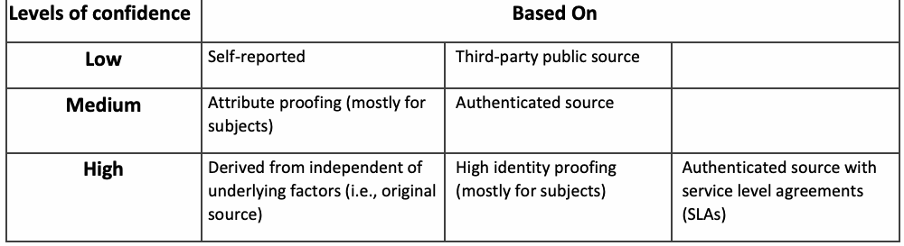
| 確信度のレベル | 根拠 | ||
|---|---|---|---|
| 低 | 自己申告 | サードパーティの公開ソース | |
| 中 | 属性の確認（主にサブジェクト向け） | 認証済みソース | |
| 高 | 基礎となる要因から独立して導出（すなわち、元のソース） | 高度な身元確認（主にサブジェクト向け） | サービスレベル合意（SLA）を伴う認証済みソース |
Attribute trustworthiness proofing relies on a concept by which organizations can make risk-based decisions based on trust in attributes supplied by remote access control functions or attribute providers. Approaches to achieving this purpose include:
属性の信頼性プルーフィングは、組織がリモートのアクセス制御機能または属性プロバイダーから提供された属性に対する信頼に基づいて、リスクに基づく決定を下すことができるという概念に依存している。この目的を達成するためのアプローチには、以下が含まれる。
•Identify, define, and describe a set of standardized attribute metadata that can be used by access control functions to help determine confidence in the attributes they are leveraging for authorization decisions.
•認可の決定のために活用している属性に対する確信度を判断するのに役立つよう、アクセス制御機能によって使用できる標準化された属性メタデータのセットを特定、定義、および記述すること。
•Identify, define, and describe a set of criteria that can be used to determine the trustworthiness of attributes (e.g., shown in Table 4), which may include a scoring system mechanism to determine an objective confidence level for a given attribute.
•属性の信頼性を判断するために使用できる一連の基準（例えば表4に示すものなど）を特定、定義、および記述すること。これには、特定の属性に対して客観的な確信度レベルを決定するためのスコアリングシステムメカニズムが含まれる場合がある。
•Develop suggested performance guidelines and specifications for remote access control functions or attribute provider operations based on an organization’s risk tolerance.
•組織のリスク許容度に基づいて、リモートのアクセス制御機能または属性プロバイダーの運用に対する推奨されるパフォーマンスガイドラインおよび仕様を策定すること。
For remote subject attributes (i.e., not from local access control function itself or NPE), attribute assurance relies on the chain of trust used to determine and report on the attributes. If the remote access control function or attribute provider reporting the attributes did not verify them, then it is necessary to provide a chain of evidence that shows that the attributes were authoritatively verified and that their association with the relevant system has been maintained.
リモートのサブジェクト属性（すなわち、ローカルのアクセス制御機能自体やNPEからのものではないもの）について、属性のアシュアランスは、属性の決定および報告に使用される信頼の連鎖に依存する。属性を報告するリモートのアクセス制御機能または属性プロバイダーがそれらを検証しなかった場合、その属性が権威ある形で検証されたこと、および関連するシステムとの関連付けが維持されていることを示す証拠の連鎖を提供する必要がある。
3.2.2 Attribute Accuracy
3.2.2 属性の正確性
Given the broad spectrum of entities that will interoperate with each other, synonyms of attribute definitions are inevitable. Interoperability standards and protocols that all entities agree to are therefore essential to enabling cooperation. Agreed-upon standards in both syntactic and semantic attribute values must be developed to ensure successful interoperation of systems. For example, a consideration is that a relying party (RP) may be assured that an attribute came from a trusted credit reporting agency, but the attribute value of a specific credit score may be disagreeable. Thus, dictionaries with standardized syntax and semantics for attribute namespaces need to be agreed upon and published by the access control functions or attribute providers.
相互運用を行うエンティティの範囲が広いことを踏まえると、属性定義の同義語が存在することは不可避である。したがって、すべてのエンティティが合意する相互運用性標準およびプロトコルは、協調を可能にするために不可欠である。システムの相互運用を確実に成功させるには、構文的および意味的な属性値の両方において合意された標準を策定しなければならない。例えば、依拠当事者（RP）は、ある属性が信頼できる信用情報機関から提供されたという確証を得られるかもしれないが、特定の信用スコアの属性値には異論があるかもしれない、という点が検討事項の一つである。したがって、属性名前空間のための標準化された構文と意味論を備えた辞書が、アクセス制御機能または属性プロバイダーによって合意され、公開される必要がある。
Attribute value inaccuracy results from different data types (e.g., integer, string, Boolean) or different classifications (e.g., levels, ranks) between access control functions and attribute providers. Thus, agreement, federated mitigation, or interpretation/conversion may be required such that the attribute value is accurate for the policy evaluation. For example, attribute values that are intrinsic to the access control model (e.g., roles for RBAC systems) must be accurately assigned to the subjects who are associated with the organization’s business functions. Unless the access control function or attribute provider is responsible for the standard, algorithm, or protocol that generates the attribute value, accuracy is typically evaluated with the attribute trust as described in Sec. 3.2.1.
属性値の不正確さは、アクセス制御機能と属性プロバイダー間における異なるデータ型（例：整数、文字列、ブール値）や異なる分類（例：レベル、ランク）に起因して発生する。したがって、ポリシー評価のために属性値が正確になるよう、合意、連携による緩和、または解釈／変換が必要とされる場合がある。例えば、アクセス制御モデルに固有の属性値（例：RBACシステムにおけるロール）は、組織の業務機能に関連付けられたサブジェクトに対して正確に割り当てられなければならない。アクセス制御機能または属性プロバイダーが、その属性値を生成する標準、アルゴリズム、またはプロトコルに責任を持つ場合を除き、正確性は通常、セクション3.2.1で説明されている属性の信頼性を用いて評価される。
3.2.3 Consideration Examples
3.2.3 検討事項の例
Table 5 shows examples of consideration of attribute veracity criteria.
表5は、属性の真実性基準に関する検討事項の例を示している。
Table 5: Example considerations for attribute veracity criteria
表5：属性の真実性基準に関する検討事項の例
| Consideration | Criteria | Applied Attributes |
| Verification | Attributes are properly verified for veracity through provision and management. | Subject, Object, Environment Condition |
| Standard Applied | Documented rules or standards exist for attribute value assignment and definition (syntax and semantic rule). | Subject, Object |
| Trust Criteria | Criteria can be used to determine the trustworthiness of attributes. | Subject, Object |
| Remote Access Control Function/Attribute Provider Guideline | Performance guidelines and specifications exist for remote access control functions or attribute providers. | Subject, Object |
原本PDFの抜粋画像
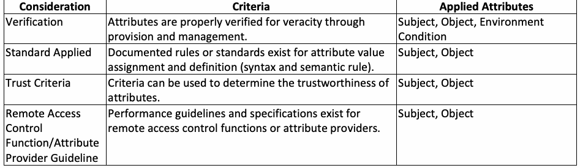
| 検討事項 | 基準 | 適用される属性 |
| 検証 | プロビジョニングおよび管理を通じて、属性の真実性が適切に検証されている。 | サブジェクト、オブジェクト、環境条件 |
| 適用される標準 | 属性値の割り当ておよび定義に関する文書化されたルールまたは標準（構文および意味論のルール）が存在する。 | サブジェクト、オブジェクト |
| 信頼基準 | 属性の信頼性を判断するために基準を使用できる。 | サブジェクト、オブジェクト |
| リモートのアクセス制御機能／属性プロバイダーのガイドライン | リモートのアクセス制御機能または属性プロバイダーに対するパフォーマンスガイドラインおよび仕様が存在する。 | サブジェクト、オブジェクト |
NISTIR 8112, Attribute Metadata: A Proposed Schema for Evaluating Federated Attributes [3], reviews the accuracy, provenance, currency, privacy, and classification of veracity in terms of standardized attribute metadata used by organizations to support business decisions. The document enables enterprises to leverage automated decision support systems that rely on attributes to implement a broad range of essential business functions. It also provides a guide for establishing a scoring framework and its associated components to enable standardized attribute confidence scores.
NISTIR 8112『Attribute Metadata: A Proposed Schema for Evaluating Federated Attributes』[3] は、組織が業務上の意思決定を支援するために使用する標準化された属性メタデータの観点から、正確性、来歴、最新性、プライバシー、および真実性の分類を検討している。同文書により、企業は属性に依存する自動化された意思決定支援システムを活用して、不可欠な幅広い業務機能を実装できるようになる。また、標準化された属性確信度スコアを実現するためのスコアリングフレームワークおよびその関連コンポーネントを確立するためのガイドも提供している。
Section 4 demonstrates a general attribute framework with an example for integrating and defining attributes to achieve attribute veracity. The example shows an organization, initially started from NLP, which governs multiple access control systems in an enterprise environment.
セクション4では、属性の真実性を達成するための属性の統合および定義の例を用いて、一般的な属性フレームワークを示す。この例は、当初NLPから開始され、エンタープライズ環境内の複数のアクセス制御システムを統治する組織を示している。
3.3 Security Consideration
3.3 セキュリティに関する考慮事項
Access control functions and attribute providers must ensure a number of properties: the security of an attribute’s value and its metadata, freedom from tampering or corruption, adequate vetting of stored attribute information, and a high level of protection within its enclave. Attribute security also determines how securely the access control function or attribute provider supplies attributes to an access control function. In other words, how does the access control function or attribute provider ensure that the attribute it intends to send is the one that the access control function will actually receive? Attribute security includes evaluating security for both stored attribute and transmitted attribute conditions. For example, to improve the security of attribute transmission, attributes can be sent via an encrypted and signed mechanism (e.g., a signed SAML [10] assertion,
アクセス制御機能および属性プロバイダは、多くの特性、すなわち属性の値およびそのメタデータのセキュリティ、改ざんや破損がないこと、保存された属性情報の適切な審査、およびそのエンクレーブ内での高水準の保護を確保しなければならない。属性セキュリティはまた、アクセス制御機能または属性プロバイダが、いかにセキュアにアクセス制御機能へ属性を提供するかを決定する。言い換えれば、アクセス制御機能または属性プロバイダは、送信しようとする属性が、アクセス制御機能が実際に受信するものであることをどのように保証するのか、ということである。属性セキュリティには、保存された属性および伝送される属性の双方の条件に対するセキュリティの評価が含まれる。例えば、属性伝送のセキュリティを向上させるために、属性は暗号化および署名されたメカニズムを介して送信できる（例：署名付きSAML [10] アサーション、
TLS [11]).
TLS [11]）。
3.3.1 Stored attribute
3.3.1 保存された属性
Stored attribute security evaluates the mechanism for the actual attribute store and how well the access control function and attribute provider protect the information or attribute-generation processes. Note that stored attribute security ensures the generation and management of an attribute and its value while the attribute value consideration, as described in Sec. 3.2.2, focuses on the semantic accuracy of attribute values. Factors or capabilities that must be evaluated include:
保存された属性のセキュリティは、実際の属性ストアのメカニズム、ならびにアクセス制御機能および属性プロバイダが情報または属性生成プロセスをどの程度適切に保護しているかを評価する。保存された属性のセキュリティは、属性およびその値の生成と管理を保証するものであるのに対し、セクション3.2.2で説明されている属性値の考慮事項は、属性値の意味論的な正確性に焦点を当てていることに注意されたい。評価しなければならない要因または機能には、以下が含まれる:
•Encryption
•暗号化
•Measures taken to detect unintended alteration of attribute values
•属性値の意図しない改変を検出するために講じられる対策
•Data stores on a network behind a proper defense-in-depth posture
•適切な多層防御体制の背後にあるネットワーク上のデータストア
•Policies enforced on the attribute update, copy, revoke, or modify process
•属性の更新、複製、失効、または変更プロセスに適用されるポリシー
•Logged and audited change of attribute
•属性変更のログ記録および監査
The stored attribute factors or capabilities are commonly used to evaluate the local access control function because the required information can be rendered locally. However, for the attribute provider, remote access control function, or remote attribute provider without local access to the involved systems, an agreement or contract that contains checklists for the evaluation of the factors or capabilities might be required.
保存された属性の要因または機能は、必要な情報をローカルで提供できるため、一般的にローカルのアクセス制御機能を評価するために使用される。しかし、関係するシステムへのローカルアクセスを持たない属性プロバイダ、リモートアクセス制御機能、またはリモート属性プロバイダについては、それらの要因または機能を評価するためのチェックリストを含む合意書または契約書が必要とされる場合がある。
3.3.2 Transmitted attribute
3.3.2 伝送される属性
Transmitted attribute security evaluates how securely the attribute is transmitted to the attribute provider or access control function. Factors or capabilities that must be evaluated include:
伝送される属性のセキュリティは、属性が属性プロバイダまたはアクセス制御機能にどれほど安全に伝送されるかを評価する。評価しなければならない要因または機能には、以下が含まれる:
•Security protocols are used for transmitting both attribute requests and attribute values to the attribute provider or access control function (e.g., transmitting in the clear without encryption versus PKI-enabled TLS sessions).
•セキュリティプロトコルは、属性要求と属性値の両方を属性プロバイダまたはアクセス制御機能に伝送するために使用される（例: 暗号化なしの平文での伝送と、PKI対応のTLSセッションの対比）。
•Replay attack protection is typically accomplished by including information provided by the access control function into the signed message that is provided by the remote access control function or attribute provider. This guarantees the integrity and confidentiality of the attribute.
•リプレイ攻撃の防御は、通常、アクセス制御機能によって提供された情報を、リモートアクセス制御機能または属性プロバイダによって提供される署名付きメッセージに含めることによって達成される。これにより、属性の完全性と機密性が保証される。
•Transmitted attributes are applied in a multi-tier receipt of attributes (i.e., when attributes are sent by remote access control function or provider such that the assured attribute can be passed through the chain of forwarding routes). For example, for higher levels of assurance, using digitally signed attributes (crypto-binding) provides a hash of the attribute to ensure that it has not been altered or tampered with before it is received.
•伝送される属性は、属性のマルチティア受信（すなわち、保証された属性が一連の転送経路を通過できるように、リモートアクセス制御機能またはプロバイダによって属性が送信される場合）に適用される。例えば、より高い保証レベルでは、デジタル署名された属性（暗号バインディング: crypto-binding）を使用することで属性のハッシュが提供され、受信前にそれが変更または改ざんされていないことが保証される。
In addition to the access control function and attribute provider’s transmission security, the security arrangements between access control functions must be considered. In order to make a correct policy decision, the transmission of attributes between access control functions should be protected from change by any other internal process of the system. If applicable, a set of consideration elements or schemes (e.g., SAML) should be identified that can be used by the access control system to help determine whether the attributes have demonstrated considerations for security criteria.
アクセス制御機能および属性プロバイダの伝送セキュリティに加えて、アクセス制御機能間のセキュリティ取り決めを考慮しなければならない。正しいポリシー決定を行うためには、アクセス制御機能間での属性の伝送は、システムの他のいかなる内部プロセスによる変更からも保護されるべきである。該当する場合、属性がセキュリティ基準に対する配慮を示しているかどうかをアクセス制御システムが判断するのを支援するために使用できる、一連の考慮要素またはスキーム（例: SAML）を特定すべきである。
3.3.3 Consideration Examples
3.3.3 考慮事項の例
Table 6 shows example considerations for attribute security criteria.
表6は、属性セキュリティ基準に関する考慮事項の例を示している。
Table 6: Example considerations for attribute security criteria
表6：属性セキュリティ基準に関する考慮事項の例
| Consideration | Criteria | Applied Attributes |
| Repository security | Secure or trusted attribute repository (e.g., dedicated or shared attribute repositories) | Subject, Object, Environment Condition |
| Communication security | Secure communication between access control functions and attribute providers (e.g., encrypted) | Subject, Object, Environment Condition |
| Process integrity | Transmission of attributes between access control functions are protected from change by any functions | Subject, Object, Environment Condition1 |
| Non-repudiation capability | Methods for non-repudiation of attribute transmission | Subject, Object, Environment Condition1 |
| Attribute change policy | Formal rules, policies, or standards to create, update, modify, and delete attributes | Subject, Object, Environment Condition1 |
原本PDFの抜粋画像
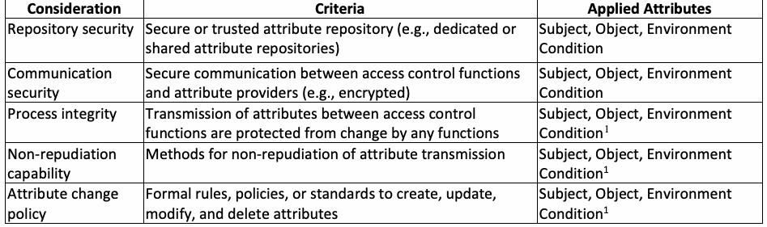
| 考慮事項 | 基準 | 適用される属性 |
| リポジトリのセキュリティ | 安全または信頼できる属性リポジトリ（例：専用または共有の属性リポジトリ） | 主体、オブジェクト、環境条件 |
| 通信セキュリティ | アクセス制御機能と属性プロバイダ間の安全な通信（例：暗号化） | 主体、オブジェクト、環境条件 |
| プロセスの完全性 | アクセス制御機能間での属性の送信が、いかなる機能による変更からも保護されていること | 主体、オブジェクト、環境条件1 |
| 否認防止機能 | 属性送信の否認防止のための方式 | 主体、オブジェクト、環境条件1 |
| 属性変更ポリシー | 属性の作成、更新、変更、削除を行うための正式なルール、ポリシー、または標準 | 主体、オブジェクト、環境条件1 |
3.4 Readiness Consideration
3.4 準備態勢に関する考慮事項
Attribute readiness considers the quality of attributes with respect to refresh, timing, cache, and backup capabilities, all of which allow access control to process the accurate access permissions without errors caused by out-of-date or unsynchronized attribute information.
属性の準備態勢では、更新（リフレッシュ）、タイミング、キャッシュ、およびバックアップ機能に関する属性の品質が考慮される。これらはいずれも、陳腐化または非同期化された属性情報に起因するエラーなしに、アクセス制御が正確なアクセス権限を処理できるようにするものである。
3.4.1 Refresh
3.4.1 更新（リフレッシュ）
Access control functions need information on how often an attribute’s value is pulled or obtained, as well as how securely the attribute’s value is processed when it is needed. Readiness considers how attribute values are updated or validated—refreshed—against ground truth by the access control function or attribute provider. Proactive acquisition must be considered for the impact of a refresh rate on a specific attribute (e.g., whether the information is being pushed from another source to the access control function or attribute provider or pulled on a schedule proactively). Attribute values on a schedule or on-demand give assurance of how current and, therefore, how applicable the attribute value may be.
アクセス制御機能は、属性値がプルまたは取得される頻度や、属性値が必要とされた際にそれがどれほど安全に処理されるかに関する情報を必要とする。準備態勢では、アクセス制御機能または属性プロバイダによって、属性値がグラウンドトゥルース（正解情報）に対してどのように更新または検証（リフレッシュ）されるかを考慮する。プロアクティブな取得については、特定属性に対する更新頻度（リフレッシュレート）の影響を考慮しなければならない（例：情報が別のソースからアクセス制御機能もしくは属性プロバイダへプッシュされているか、またはスケジュールに従ってプロアクティブにプルされているか）。スケジュールに基づく、あるいはオンデマンドの属性値は、属性値がどの程度最新であり、したがってどの程度適用可能であるかの保証を提供する。
3.4.2 Synchronization
3.4.2 同期
Synchronization of attribute transmission sequences between access control functions must be coordinated based on the sequence of the access control system’s processing scheme or protocol such that the updates of attributes and their values will not result in faulty access control decisions. For example, to keep access control functions in sync in the XACML [12] scheme, updating attributes by policy administration point (PAP) should not be allowed while an authorization process is in progress; updated or newly added attributes will be available after policy enforcement points (PEPs) finish the process.
アクセス制御機能間における属性送信シーケンスの同期は、属性およびその値の更新が誤ったアクセス制御決定をもたらさないよう、アクセス制御システムの処理スキームまたはプロトコルのシーケンスに基づいて調整されなければならない。例えば、XACML [12] スキームにおいてアクセス制御機能の同期を維持するためには、認可処理の進行中にポリシー管理ポイント（PAP）による属性の更新を許可すべきではなく、更新または新規追加された属性は、ポリシー施行ポイント（PEP）が処理を完了した後に利用可能となる。
1If the environment condition is human-controllable or machine-generated instead of non-human controllable factors such as time, location, and temperature.
1時間、場所、温度などの人間が制御できない要因ではなく、環境条件が人間によって制御可能または機械によって生成される場合。
3.4.3 Cache
3.4.3 キャッシュ
Readiness also ensures that a recent set of attributes required for appropriate access control for the protected object in question are cached in the event that the most updated attributes from authoritative attribute sources or repositories cannot be accessed during an information system emergency (i.e., low bandwidth, loss of service). In addition, the failure recovery capability of attribute repositories must be considered.
準備態勢はまた、情報システムの緊急事態（すなわち、低帯域幅、サービスの喪失）の際に、権威ある属性ソースまたはリポジトリからの最新の属性にアクセスできない場合に備えて、当該保護対象オブジェクトに対する適切なアクセス制御に必要な最近の属性セットがキャッシュされることも保証する。さらに、属性リポジトリの障害復旧能力も考慮されなければならない。
3.4.4 Backup
3.4.4 バックアップ
Since attributes are the critical components of an organization’s access control system, they should always be available while the system is functional. Readiness should therefore include the capabilities of fail-over and the recovery of attributes from the failures of attribute repositories or transmission systems.
属性は組織のアクセス制御システムの極めて重要なコンポーネントであるため、システムが機能している間は常に利用可能であるべきである。したがって、準備態勢には、フェイルオーバーの機能、および属性リポジトリまたは伝送システムの障害からの属性の復旧の機能が含まれるべきである。
3.4.5 Consideration Examples
3.4.5 考慮事項の例
A set of consideration elements that can be used to help determine the attributes’ readiness is shown in the attribute readiness criteria example in Table 7.
属性の準備態勢の判断を支援するために使用できる一連の考慮要素を、表7の属性準備態勢基準の例に示す。
Table 7: Example considerations for attribute readiness criteria
表7：属性準備態勢基準に関する考慮事項の例
| Consideration | Criteria | Applied Attributes |
| Attribute refresh frequency | Attribute refresh frequency meets the system performance requirement. | Subject, Object, Environment Condition |
| Attribute caching | Attribute caching during run-time meets the system performance requirement and protocols between access control functions. | Subject, Object |
| Attribute process sequence | Attribute transmission between access control functions are coordinated without generating errors. | Subject, Object |
| Backup capability | Fail-over or back-up attributes are supported. | Subject, Object |
原本PDFの抜粋画像
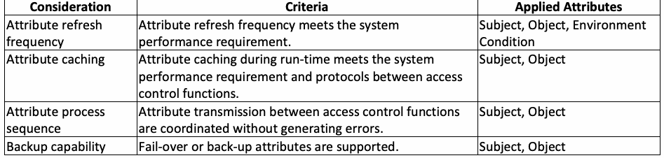
| 考慮事項 | 基準 | 適用される属性 |
| 属性の更新頻度 | 属性の更新頻度がシステム性能要件を満たしている。 | サブジェクト、オブジェクト、環境条件 |
| 属性のキャッシング | 実行時における属性のキャッシングが、システム性能要件およびアクセス制御機能間のプロトコルを満たしている。 | サブジェクト、オブジェクト |
| 属性処理シーケンス | アクセス制御機能間の属性送信がエラーを発生させることなく調整されている。 | サブジェクト、オブジェクト |
| バックアップ機能 | フェイルオーバーまたはバックアップ属性がサポートされている。 | サブジェクト、オブジェクト |
3.5 Management Considerations
3.5 管理上の考慮事項
A number of factors should be reviewed to ensure the efficiency and consistent use of attributes. Management mechanisms include metadata, hierarchical structures for attribute grouping, minimization and transformation methods for attribute efficiency, and additional support capabilities such as attribute integration with authentication, delegation of attributes, attribute review, and logs for recording attribute access and updates as described in the following sections.
属性の効率性および一貫した使用を確保するために、多くの要素をレビューすべきである。管理メカニズムには、以降のセクションで説明するように、メタデータ、属性グループ化のための階層構造、属性の効率化のための最小化および変換手法、ならびに認証との属性統合、属性の委任、属性レビュー、属性へのアクセスおよび更新を記録するためのログといった追加のサポート機能が含まれる。
3.5.1 Group Attribute Use Metadata
3.5.1 メタデータを用いた属性のグループ化
In the course of managing attributes, metadata is applied to subjects and objects as extended attribute information useful for enforcing fine-grained access control policies that incorporate information about the attributes and manage the volumes of data required for enterprise attribute management. Metadata can also be used to assign an assurance level or measure of confidence as a composite score for attribute veracity [3], security, and readiness. Standardized attribute metadata are elements of information about each attribute. These elements include information about the attribute such as the value (i.e., how often it is updated), the processes used to create or establish the attribute (i.e., whether it is self-asserted or retrieved from a record), and the source of the attribute itself (i.e., authoritative). Regardless of the access control methodology, establishing a score system for an attribute’s metadata elements can support access decisions. The decision to use specific attributes from remote access control functions or attribute providers could then be made based on individual attribute confidence scores.
属性を管理する過程において、メタデータは、属性に関する情報を組み込み、エンタープライズ属性管理に必要なデータ量を管理するきめ細かなアクセス制御ポリシーを実施するのに有用な拡張属性情報として、サブジェクトおよびオブジェクトに適用される。メタデータは、属性の真実性 [3]、セキュリティ、および準備態勢の総合スコアとして保証レベルまたは信頼度の尺度を割り当てるためにも使用できる。標準化された属性メタデータは、各属性に関する情報の要素である。これらの要素には、値（すなわち、更新頻度）、属性の作成または確立に使用されたプロセス（すなわち、自己申告されたものか記録から取得されたものか）、属性自体の出所（すなわち、権威ある情報源か）などの属性に関する情報が含まれる。アクセス制御手法にかかわらず、属性のメタデータ要素に対するスコアシステムを確立することは、アクセス決定の支援となり得る。そうすれば、リモートのアクセス制御機能または属性プロバイダーからの特定の属性を使用するかどうかの決定を、個々の属性の信頼度スコアに基づいて行うことができる。
Table 8 shows an example of standard (agreed-upon) metadata for sharing provenance information as attribute source. The specific attribute value “Person” may be sufficient for accessing data for a public information request but insufficient for access to a sensitive system since the metadata “Clearance Level” is self-reported and not drawn from an authoritative source.
表8は、属性ソースとして来歴情報を共有するための標準的な（合意された）メタデータの例を示している。特定の属性値「Person」は、公開情報要求のためのデータへのアクセスには十分であり得るが、メタデータ「Clearance Level」が自己申告によるものであり、権威ある情報源から取得されたものではないため、機微なシステムへのアクセスには不十分であり得る。
Table 8: Example of standard attribute name/value for attribute source metadata
表8：属性ソースメタデータの標準属性名／値の例
| Standard Attribute Name | Standard Attribute Value |
| Entity applicability | Person |
| Name | Joe Smith |
| Classification | Public |
| Confidence Level | 1 (Self-Reported) |
| Assurance detail - Refresh | Pulled |
| Assurance detail - Last updated | 3/8/2015 |
| Attribute from | USAJOBS.gov |
原本PDFの抜粋画像
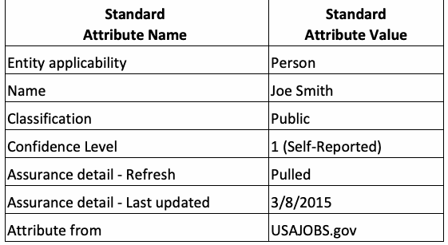
| 標準属性名 | 標準属性値 |
| エンティティ適用性 | Person（人物） |
| 氏名 | Joe Smith |
| 区分 | Public（公開） |
| 信頼度レベル | 1（自己申告） |
| 保証詳細 - 更新 | プル型 |
| 保証詳細 - 最終更新日 | 2015年3月8日 |
| 属性提供元 | USAJOBS.gov |
To enhance access control flexibility and facilitate attribute management and administration, hierarchical relationships among groups and attributes are usually applied, such that instead of assigning each subject/object with the same attributes, the subjects/objects can be collected into groups with appropriate group metadata and values (i.e., meta-attribute) [13] which represent the common characteristics of the subjects/objects in the system. Group metadata can also be combined into a higher order group if a group of metadata possesses the same characteristics. Thus, a group hierarchy is a partial order relation where groups in the lower order obtain all attributes assigned to the groups at the higher order.
アクセス制御の柔軟性を高め、属性の管理および運用を容易にするため、グループと属性の間の階層関係が通常適用される。これにより、各サブジェクト／オブジェクトに同一の属性を割り当てる代わりに、システム内のサブジェクト／オブジェクトの共通特性を表す適切なグループメタデータおよび値（すなわちメタ属性）[13]を持つグループへとサブジェクト／オブジェクトをまとめることができる。また、メタデータのグループが同一の特性を持つ場合、グループメタデータをより上位のグループへと結合することもできる。したがって、グループ階層は半順序関係であり、下位のグループは上位のグループに割り当てられたすべての属性を取得する。
Figure 2 shows an example of a group hierarchy where attribute Attribute_1 ‘s ID = User Group_A and Attribute_2’s ID = Group_B belong to the metadata Metadata_1’s value: ID = Support and Skill = Administration. Metadata Metadata_1 and Metadata_2 inherit Metadata_3’s ID = Production and Security Class =2. So, if a subject has the attribute Attribute_1, it will also have attribute values of Metadata_1 and Metadata_3.
図2は、属性Attribute_1のID = User Group_AおよびAttribute_2のID = Group_Bが、メタデータMetadata_1の値であるID = SupportおよびSkill = Administrationに属するグループ階層の例を示している。メタデータMetadata_1およびMetadata_2は、Metadata_3のID = ProductionおよびSecurity Class = 2を継承する。そのため、あるサブジェクトが属性Attribute_1を持つ場合、そのサブジェクトはMetadata_1およびMetadata_3の属性値も持つことになる。
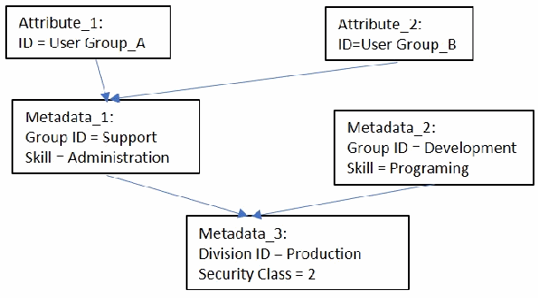
図2：グループメタデータ。矢印で結んだ箱の図である。「Attribute_1: ID = User Group_A」と「Attribute_2: ID=User Group_B」がともに「Metadata_1: Group ID = Support, Skill = Administration」を指す。「Metadata_1」と「Metadata_2: Group ID = Development, Skill = Programing」がともに「Metadata_3: Division ID = Production, Security Class = 2」を指す。
Figure 2: Group metadata
図2：グループメタデータ
3.5.2 Attribute Privilege Hierarchies
3.5.2 属性特権階層
Attributes can be classified in a tree structure based on their privilege relationship in an access control system. Such a relationship can be represented by attributes being the nodes in the tree, such that if a senior subject attribute is assigned to a junior subject attribute, then all the access privileges associated with this junior subject attribute are automatically acquired by that subject, which have the senior attribute through the attribute-value inheritance. Figure 3 (a) shows an example where subjects with the subject attribute Role = Professor also have the privileges of a subject with the subject attribute Role = TA. For object, if a senior object attribute is assigned to a junior object attribute, then all the access privileges associated with this senior object attribute are automatically allowed to access the objects with the junior attributes through the attribute-value inheritance. Figure 3 (b) shows an example where access to the object with attribute Type = Secret can also access the object with attribute Type = Classified.
アクセス制御システムにおける特権関係に基づいて、属性をツリー構造に分類することができる。このような関係は属性をツリーのノードとすることで表現でき、上位のサブジェクト属性が下位のサブジェクト属性に割り当てられている場合、この下位のサブジェクト属性に関連付けられたすべてのアクセス特権は、上位の属性を持つサブジェクトによって、属性値の継承を通じて自動的に取得される。図3 (a)は、サブジェクト属性 Role = Professor を持つサブジェクトが、サブジェクト属性 Role = TA を持つサブジェクトの特権も併せ持つ例を示している。オブジェクトの場合、上位のオブジェクト属性が下位のオブジェクト属性に割り当てられていると、この上位のオブジェクト属性に関連付けられたすべてのアクセス特権は、属性値の継承を通じて、下位の属性を持つオブジェクトへのアクセスも自動的に許可される。図3 (b)は、属性 Type = Secret を持つオブジェクトへのアクセスが、属性 Type = Classified を持つオブジェクトにもアクセスできる例を示している。
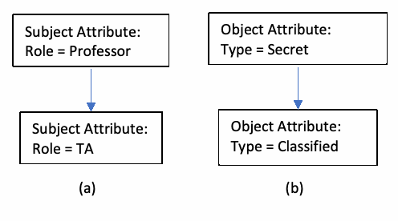
図3：サブジェクト（a）とオブジェクト（b）の属性特権階層。左側はSubject Attribute（Role = Professor）から（Role = TA）へ、右側はObject Attribute（Type = Secret）から（Type = Classified）へ矢印でつながる。
Figure 3: Attribute privilege hierarchies of subject (a) and object (b)
図3：サブジェクト（a）およびオブジェクト（b）の属性特権階層
3.5.3 Attribute Transformation
3.5.3 属性の変換
Attributes that are typically assigned to very large numbers of subjects and many types of objects can lead to administrative difficulties from different perspectives for access control. For example, a cloud system may have many types of virtual machines, block storage resources, object storage resources (e.g., objects, containers, accounts), or network resources (e.g., firewalls, routers), all of which have many attributes of their own. As a result, there would be numerous attributes specific to different types of objects, and new attributes would be added to the system as new object types. Thus, it takes considerable effort to assign or de-assign these attribute values to subjects as well as objects. Furthermore, authorization policies defined with these attributes would be large and complex in nature and can result in difficulty with specification, update, modification, and review.
通常、非常に多数のサブジェクトや多種のオブジェクトに割り当てられる属性は、アクセス制御において様々な観点から管理上の困難を招く可能性がある。例えば、クラウドシステムには多種の仮想マシン、ブロックストレージリソース、オブジェクトストレージリソース（例：オブジェクト、コンテナ、アカウント）、またはネットワークリソース（例：ファイアウォール、ルーター）が存在する場合があり、これらすべてがそれぞれ独自の多数の属性を持っている。結果として、異なる種類のオブジェクトに特有の多数の属性が存在することになり、新たなオブジェクトタイプが加わるのに伴って新しい属性がシステムに追加されることになる。したがって、これらの属性値をオブジェクトだけでなくサブジェクトにも割り当てたり割り当て解除したりするには多大な労力を要する。さらに、これらの属性で定義される認可ポリシーは本質的に大規模かつ複雑になり、記述、更新、変更、およびレビューが困難になる可能性がある。
To manage these difficulties, the transformation of attribute management—such as reduction, expansion, and grouping as described in Sec. 3.5.2—must be considered. Attribute reduction transforms a large set of attribute assignments into smaller sets by abstracting attributes that are too specific for particular types of subjects or objects. Minimizing the number of attribute sources used in authorization decisions improves performance and simplifies overall security management such as creation, updating, deletion, the import or export of attributes, the design of modular authorization policies, and the modeling of hierarchical policies [14].
こうした困難を管理するために、3.5.2節で説明した縮約、拡張、およびグループ化といった属性管理の変換を検討しなければならない。属性の縮約は、特定のタイプのサブジェクトまたはオブジェクトに過度に特化している属性を抽象化することにより、属性割り当ての大規模なセットをより小さなセットへと変換する。認可決定に使用される属性ソースの数を最小限に抑えることで、パフォーマンスが向上し、属性の作成、更新、削除、インポートやエクスポート、モジュール型認可ポリシーの設計、階層的ポリシーのモデリングといった全体的なセキュリティ管理が簡素化される [14]。
3.5.4 Integration with Authentication
3.5.4 認証との統合
The shift from internal to public-based hosting (e.g., cloud) and increasing numbers of subjects who access applications from outside of the organizational boundary have resulted in the increased distribution of applications. Attributes of subjects and objects can be associated with the identities of subjects and objects, making it efficient or required to trust the subject and object attributes provided by the authentication system through a secure connection for advanced authentication technologies such as federated digital identity or single sign-on (SSO). Attributes are specified in privileges and constraints of access control rules, and applications require more information than the identity of a subject (user), such as geolocation, time of day, role, organization, account information, and authentication details. In addition, a major benefit of integrating attributes to authenticated IDs and access control with the company’s authentication system is to keep the cost and management objects under budget [5].
内部ホスティングからパブリックベースのホスティング（例：クラウド）への移行や、組織の境界の外側からアプリケーションにアクセスするサブジェクトの増加により、アプリケーションの分散化が進んでいる。サブジェクトおよびオブジェクトの属性は、サブジェクトおよびオブジェクトのアイデンティティに関連付けることができ、フェデレーション型デジタルアイデンティティやシングルサインオン（SSO）などの高度な認証技術において、安全な接続を通じて認証システムから提供されるサブジェクトおよびオブジェクトの属性を信頼することが効率的または必須となる。属性はアクセス制御ルールの特権や制約で指定され、アプリケーションは地理的位置、時刻、役割、組織、アカウント情報、認証の詳細など、サブジェクト（ユーザー）のアイデンティティ以上の情報を必要とする。さらに、属性を、認証されたIDおよびアクセス制御に、企業の認証システムとともに統合することの大きな利点は、コストと管理対象を予算内に抑えることである [5]。
For example, XACML needs contextual information about the subject and, potentially, the object being accessed to properly evaluate an access request. With a standardized inbound identity protocol such as SAML (Security Assertion Markup Language, an XML-based framework for communicating subject authentication, entitlement, and attribute information), OAuth, or OpenID Connect, it is much simpler for the XACML deployment to leverage identity information in a standard way for fine-grained access-control attributes. More specifically, SAML provides a standard for conveying identity information to access control attributes by assuming two primary roles in any transaction: 1) the organization where the identity is established, known as the identity provider (IdP), and 2) the organization that will use this identity, known as the service provider (SP). The assertion is a trusted statement of identity established by a cryptographic key exchange that the IdP makes to the SP. The service provider and the identity provider will agree upon what information the SP will require as the attribute contract, which typically identifies the subject who is making the request. It can also contain other attributes that the SP needs to make the application work, especially for making access control decisions [15].
例えば、XACMLがアクセス要求を適切に評価するには、サブジェクトおよび潜在的にはアクセス対象のオブジェクトに関するコンテキスト情報が必要となる。SAML（Security Assertion Markup Language、サブジェクトの認証、資格付与、および属性情報を伝達するためのXMLベースのフレームワーク）、OAuth、OpenID Connectなどの標準化されたインバウンドアイデンティティプロトコルを使用することで、XACML導入環境において、きめ細かいアクセス制御属性のために標準的な方法でアイデンティティ情報を活用することがはるかに容易になる。具体的には、SAMLは、あらゆるトランザクションにおいて2つの主要な役割を想定することで、アイデンティティ情報をアクセス制御属性へと伝達するための標準を提供する。それらは、1）アイデンティティが確立される組織であるアイデンティティプロバイダー（IdP）、および 2）このアイデンティティを使用する組織であるサービスプロバイダー（SP）である。アサーションは、暗号鍵交換によって確立された、IdPがSPに対して行うアイデンティティに関する信頼された言明である。サービスプロバイダーとアイデンティティプロバイダーは、SPが属性規約として要求する情報について合意し、通常これによって要求を行っているサブジェクトが特定される。また、特にアクセス制御の決定を行うために、SPがアプリケーションを機能させるために必要とする他の属性を含めることもできる [15]。
3.5.5 Delegation
3.5.5 委任
Proper enforcement of data resource policies is dependent on the enforcement of attribute administrative policies. This is especially true in a federated or collaborative environment where governance policies require different organizational entities to have different and possibly overlapping responsibilities for administering attributes. A common practice is to restrict the creation of attribute values and subject and object assignments to those attributes in different venues based on a notion of mutual trust. A preferred and more rigorous approach for establishing and managing attribute administrative policies is through delegation. Delegation allows an authority (delegator) to delegate all or parts of its own authority or someone else’s authority to another subject (delegate). This would enable a systematic and policy-preserving approach to the creation of administrative roles. The delegation of administrative capabilities begins with a single administrator and ends with subjects with attribute management capabilities. Delegation assumes a system that manages attributes through a standard set of administrative operations, applying a recognized enforcement interface and a centralized decision-making function as might be used for accessing data resources.
データリソースポリシーの適切な執行は、属性管理ポリシーの執行に依存する。これは、ガバナンスポリシーにより、属性の管理に関して異なる組織実体がそれぞれ異なり、場合によっては重複する責任を持つことが求められる、フェデレーション環境や協調環境において特に当てはまる。一般的な慣行は、相互の信頼という概念に基づいて、異なる場における属性値の作成ならびにそれらの属性に対するサブジェクトおよびオブジェクトの割り当てを制限することである。属性管理ポリシーを確立および管理するためのより望ましく厳格なアプローチは、委任を通じたものである。委任により、権限者（委任者）は、自身の権限または他の誰かの権限のすべてまたは一部を別のサブジェクト（被委任者）に委任できるようになる。これにより、管理ロールの作成に対する体系的かつポリシーを維持したアプローチが可能になる。管理機能の委任は単一の管理者から始まり、属性管理機能を持つサブジェクトで終わる。委任は、データリソースへのアクセスに使用されるような、認知された執行インターフェースと集中型の決定機能を適用して、標準的な管理操作セットを通じて属性を管理するシステムを前提としている。
3.5.6 Attribute Review
3.5.6 属性レビュー
Assigning one or more attributes to a subject indirectly grants the subject capabilities to perform various operations on system objects. Similarly, assigning an object to one or more object attributes indirectly establishes access entries to a variety of subjects to perform operations on that object. A desired feature of an access control system is to review these capabilities and access entries on an attribute-by-attribute basis or via combinations. This feature is sometimes referred to as “before the fact audit” and object discovery. “Before the fact audit” has been suggested by some to be one of RBAC’s most prominent features [6], and it includes the ability to review the consequences of assigning a subject to a role. It also includes the capability for a subject to discover or see accessible objects prior to issuing an access request. The ability to review the access control entries of an object attribute is equally important. What are the consequences of assigning an object to an attribute or deleting an assignment? Another valuable review consideration is the identification of the attributes necessary for a subject to be able to access an object as well as what attributes might prevent such access.
サブジェクトに1つ以上の属性を割り当てることで、そのサブジェクトに対してシステムオブジェクト上で様々な操作を実行する機能が間接的に付与される。同様に、オブジェクトを1つ以上のオブジェクト属性に割り当てることで、そのオブジェクト上で操作を実行するための様々なサブジェクトに対するアクセスエントリが間接的に確立される。アクセス制御システムの望ましい機能は、これらの機能およびアクセスエントリを属性ごとまたは組み合わせによってレビューすることである。この機能は、時に「事前の監査（before the fact audit）」およびオブジェクト発見と呼ばれる。「事前の監査」はRBACの最も顕著な機能の1つであると一部で示唆されており[6]、サブジェクトをロールに割り当てた結果をレビューする能力が含まれる。また、アクセス要求を発行する前に、サブジェクトがアクセス可能なオブジェクトを発見または確認する機能も含まれる。オブジェクト属性のアクセス制御エントリをレビューする能力も同様に重要である。オブジェクトを属性に割り当てたり、割り当てを削除したりするとどのような結果が生じるか。もう1つの貴重なレビュー検討事項は、サブジェクトがオブジェクトにアクセスできるようにするために必要な属性、ならびにそのようなアクセスを妨げる可能性のある属性を特定することである。
3.5.7 Log
3.5.7 ログ
For more stringent security, an organization might require that all activities—including changes (e.g., creation, modification, deletion) and use of attributes—be logged in an audit trail providing approval of changes to attributes and values for later investigation. Further, monitoring of high-risk privileged access to high-risk attributes should be implemented. An annual re-certification of attribute validation schema may be required.
より厳格なセキュリティのために、組織は、属性の変更（例：作成、変更、削除）および使用を含むすべての活動を、後の調査のために属性および値の変更の承認を提供する監査証跡にログ記録することを要求する場合がある。さらに、高リスクな属性への高リスクな特権アクセスの監視が実装されるべきである。属性検証スキーマの年次再認証が要求される場合がある。
3.5.8 Considerations Examples
3.5.8 検討事項の例
Table 9 shows example considerations for attribute management criteria.
表9は、属性管理基準に関する検討事項の例を示している。
Table 9: Example considerations for attribute management criteria
表9: 属性管理基準の検討事項の例
| Consideration | Criteria | Applied Attributes |
| Attribute structure | Attribute metadata, hierarchies, and inheritance schemes are accurate based on the access control policy requirements. | Metadata (meta-attributes) |
| Integration with authentication | Attributes are integrated into the company’s authentication system for attribute federation, SSO, etc. | Subject, Object |
| Attribute efficiency | Attributes expansion and minimization improve the performance of access control system. | Subject, Object |
| Attribute delegation | Attributes are delegated based on the access control policies | Subject, Object |
| Attribute review | Attributes assignments can be reviewed. | Subject, Object |
| Access log | Attribute changes and access can be logged. | Subject, Object, Environment Condition |
原本PDFの抜粋画像
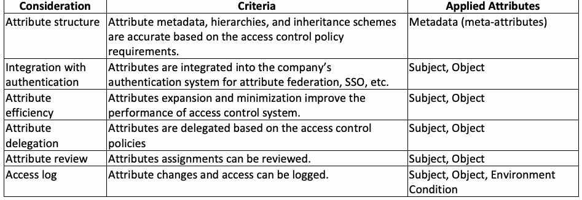
| 検討事項 | 基準 | 適用属性 |
| 属性構造 | アクセス制御ポリシーの要件に基づき、属性メタデータ、階層、および継承スキームが正確であること。 | メタデータ（メタ属性） |
| 認証との統合 | 属性フェデレーションやSSOなどのために、属性が企業の認証システムに統合されていること。 | サブジェクト、オブジェクト |
| 属性の効率性 | 属性の拡張と最小化によってアクセス制御システムのパフォーマンスが向上すること。 | サブジェクト、オブジェクト |
| 属性の委任 | 属性がアクセス制御ポリシーに基づいて委任されること | サブジェクト、オブジェクト |
| 属性のレビュー | 属性の割り当てがレビュー可能であること。 | サブジェクト、オブジェクト |
| アクセスログ | 属性の変更およびアクセスがログに記録可能であること。 | サブジェクト、オブジェクト、環境条件 |
Based on the considerations in Sec. 3, Sec. 4 will demonstrate a general attribute framework for integrating and defining attributes using metadata. The example shows access control rules that were initially developed from NLP, which governs multiple access control systems in an enterprise environment.
第3章の検討事項に基づき、第4章では、メタデータを使用して属性を統合および定義するための汎用属性フレームワークを示す。この例では、エンタープライズ環境内の複数のアクセス制御システムを統括するNLPから当初策定されたアクセス制御ルールを示す。
4 General Attribute Framework
4 汎用属性フレームワーク
The preparation and veracity of attributes is especially crucial when applying access control to a multi-host environment, such as an enterprise system, where attributes are created and managed by diverse organizational units. The attributes are used for both local (organization unit) and global (enterprise) access control policies. Therefore, a mechanism is required to mitigate the syntactic and semantic differences of attributes. An example is the General Attribute framework (GAF) that allows attributes to be defined with syntactic and semantic accuracy across federated and networked systems under the enterprise ABAC domain where initial access control policies are in natural language without formal attribute definitions. This chapter reviews the use of GAF for attribute accuracy.
多様な組織単位によって属性が作成および管理されるエンタープライズシステムなどのマルチホスト環境にアクセス制御を適用する場合、属性の準備と真実性は特に極めて重要である。属性は、ローカル（組織単位）とグローバル（エンタープライズ）の双方のアクセス制御ポリシーに使用される。したがって、属性の構文的および意味的な相違を緩和するメカニズムが必要とされる。その一例が、初期のアクセス制御ポリシーが正式な属性定義のない自然言語で記述されているエンタープライズABACドメインの下で、フェデレーション化およびネットワーク化されたシステム全体にわたり属性を構文的かつ意味的に正確に定義できるようにする汎用属性フレームワーク（GAF）である。本章では、属性の正確性を確保するためのGAFの利用について概説する。
To enforce access control policies across the enterprise, the policies must be in a machine-readable format processed by the computer that performs access control for the information system (i.e., decision engine). However, most initial access control policies originate in natural language that cannot be ingested and processed by the decision engine. Thus, it is necessary to translate the natural language policies into machine-readable policy rules. A general approach is to have an object domain (e.g., laws or statutes for privacy policies) expert examine the system’s subject attributes and map the access privileges to the system’s objects according to the policy applied. After completion of the work, object domain experts will again be needed when the policy or the system is updated. Since each system requires the object domain expert’s effort to translate the policy from its local attribute definitions, the total cost of the administrative overhead may be unmanageable.
エンタープライズ全体でアクセス制御ポリシーを適用するには、情報システムのアクセス制御を実行するコンピュータ（すなわち決定エンジン）によって処理される機械可読形式でポリシーが存在しなければならない。しかし、ほとんどの初期アクセス制御ポリシーは自然言語に由来しており、決定エンジンによって取り込んで処理することはできない。したがって、自然言語ポリシーを機械可読なポリシールールへと変換する必要がある。一般的なアプローチは、オブジェクトドメイン（例：プライバシーポリシーに関する法律や制定法）の専門家にシステムのサブジェクト属性を精査させ、適用されるポリシーに従ってシステムのオブジェクトに対するアクセス特権をマッピングさせることである。作業の完了後も、ポリシーまたはシステムが更新された際には、オブジェクトドメインの専門家が再び必要となる。各システムがそのローカルな属性定義からポリシーを変換するためにオブジェクトドメインの専門家の労力を必要とすることから、管理オーバーヘッドの総コストは手に負えなくなる可能性がある。
This problem also applies to mapping between an enterprise attribute schema and an application-specific schema, particularly those built before the enterprise schema was defined and/or commercial off-the-shelf (COTS) products that come with their own built-in schema (e.g., those typically established for legacy information systems). For attribute accuracy, organizations must normalize subject attribute names and values or maintain a map of equivalent terms, all of which should be managed by a central authority.
この問題は、エンタープライズ属性スキーマとアプリケーション固有のスキーマとの間のマッピングにも当てはまり、特にエンタープライズスキーマが定義される前に構築されたスキーマや、独自の組み込みスキーマを備えた商用オフザシェルフ（COTS）製品（例：レガシー情報システム用に一般的に確立されたもの）において顕著である。属性の正確性のために、組織はサブジェクト属性の名前と値を正規化するか、同等用語の対応関係を維持しなければならず、これらはすべて中央機関によって管理されるべきである。
It is, therefore, important to devise a portable framework that is general enough to be used by access control administrators to compose their access control policies without the extra cost of translating or learning object domain knowledge. A GAF should be constructed from the content and ontology of the intended policy using generic attributes which can be applied to the specific attributes of any information system in different application domains. The National Identity Exchange Federation (NIEF) Attribute Registry is a collection of attribute definitions that are intended for use by organizations and communities that wish to implement Federated Identity and Privilege Management technologies within the context of the NIEF. Each attribute definition listed there has been developed with the intent to enable organizations to exchange attribute data in a manner that permits machine parsing and comprehension [9]. Figure 4 shows the relations of the object domain policy and the machine-readable policy for each individual system.
したがって、アクセス制御管理者がオブジェクトドメイン知識を学習したり変換したりする余分なコストをかけることなく、アクセス制御ポリシーを作成するために使用できる十分に汎用的な、移植性の高いフレームワークを考案することが重要である。GAFは、異なるアプリケーションドメインにおけるあらゆる情報システムの固有属性に適用できる汎用属性を使用して、意図されたポリシーの内容およびオントロジーから構築されるべきである。National Identity Exchange Federation（NIEF）属性レジストリは、NIEFのコンテキスト内でフェデレーションアイデンティティおよび特権管理技術を実装することを望む組織やコミュニティによる利用を意図した属性定義のコレクションである。そこに記載されている各属性定義は、機械による構文解析と理解を可能にする方法で組織が属性データを交換できるようにすることを意図して策定されている [9]。図4は、個々のシステムにおけるオブジェクトドメインポリシーと機械可読ポリシーとの関係を示している。
![Figure 4: Producing access control policies without (a) and with a (b) General Attribute Framework (GAF). Two panels. (a) "Non-portable view of ABAC systems without GAF (e.g., need law or statute experts for every system)": three stacked groups. In each, a speech bubble "Natural language policy" points to a figure labeled "Domain experts", and arrows from a scroll "System 1 local and COTS Attributes" (then System 2, System 3) and from a stack of documents "Resource domain policy" point to the Domain experts, from whom an arrow points down to a banner "System 1 AC policy" (then "System 2 AC policy", and "System n AC policy" for the third group). A dotted vertical line separates the second and third groups. (b) "Portable view of ABAC systems using GAF (e.g., only need one law or statutes expert for multiple systems)": a single "Natural language policy" bubble and an arrow from "Resource domain policy" point to "Domain experts", who point to gears labeled "GAF". Arrows from scrolls "System 1 local and COTS Attributes", "System 2 local and COTS Attributes" and "System n local and COTS Attributes" (a dotted line between the last two) point up to GAF, and arrows from GAF point down to banners "System 1 AC policy", "System 2 AC policy" and "System n AC policy".](assets/205/p0031-figure-01.png)
図4: 汎用属性フレームワーク（GAF）なし (a) およびあり (b) でのアクセス制御ポリシーの生成。2つの部分からなる。(a)「Non-portable view of ABAC systems without GAF (e.g., need law or statute experts for every system)」（GAFを使わないABACシステムの移植性のない見方（例：システムごとに法令の専門家が必要））：3つのまとまりが縦に並ぶ。各まとまりでは、吹き出し「Natural language policy」（自然言語のポリシー）が「Domain experts」（ドメイン専門家）と記した人物を指し、巻物「System 1 local and COTS Attributes」（システム1のローカル属性およびCOTS属性。続いてSystem 2、System 3）と書類の束「Resource domain policy」（リソースドメインのポリシー）からの矢印がDomain expertsに向かい、そこから下向きの矢印が旗「System 1 AC policy」（システム1のACポリシー。続いて「System 2 AC policy」、3つ目のまとまりでは「System n AC policy」）を指す。2つ目と3つ目のまとまりの間に縦の点線がある。(b)「Portable view of ABAC systems using GAF (e.g., only need one law or statutes expert for multiple systems)」（GAFを使うABACシステムの移植性のある見方（例：複数のシステムに法令の専門家が1人だけ必要））：1つの「Natural language policy」の吹き出しと「Resource domain policy」からの矢印が「Domain experts」を指し、Domain expertsは「GAF」と記した歯車を指す。巻物「System 1 local and COTS Attributes」「System 2 local and COTS Attributes」「System n local and COTS Attributes」（後の2つの間に点線）からの矢印がGAFへ向かい、GAFからの矢印が旗「System 1 AC policy」「System 2 AC policy」「System n AC policy」へ向かう。
Figure 4: Producing access control policies without (a) and with a (b) General Attribute Framework (GAF)
図4: 汎用属性フレームワーク（GAF）なし (a) およびあり (b) でのアクセス制御ポリシーの生成
The goal of a GAF is to provide a framework to serve as a layer between NLP and machine-readable policies and rules, allowing access control policy authors to compose policies without object domain expert knowledge of the policy related to the object. Derived from analyzing the content and ontology of the policy rules, a GAF contains access rules associated with the subject and object generic attributes, which are generic for any domain of an attribute-based access control (ABAC) system. In short, a GAF is an ABAC policy with rules in terms of generic attributes based on access control elements: subject/object attributes, environment conditions, and actions. The format of a GAF access control rule is:
GAFの目標は、NLPと機械可読なポリシーおよびルールの間の層として機能するフレームワークを提供し、アクセス制御ポリシーの作成者がオブジェクトに関連するポリシーのオブジェクトドメイン専門知識なしでポリシーを構成できるようにすることである。ポリシールールのコンテンツおよびオントロジーの分析から導出されたGAFには、サブジェクトおよびオブジェクトの汎用属性に関連付けられたアクセスルールが含まれており、これらの属性は属性ベースのアクセス制御（ABAC）システムの任意のドメインに対して汎用である。要約すると、GAFは、アクセス制御要素（サブジェクト/オブジェクト属性、環境条件、およびアクション）に基づく汎用属性によって記述されたルールを持つABACポリシーである。GAFアクセス制御ルールの形式は以下のとおりである。
IF <subject generic attribute₁> … AND/OR <subject generic attributeₙ> AND <environment condition₁> … AND/OR <environment conditionₙ> THEN ALLOW <action₁> … AND <actionₙ> ACCESS TO OBJECT WITH <object generic attribute₁> … AND/OR <object generic attributeₙ>
IF <subject generic attribute₁> … AND/OR <subject generic attributeₙ> AND <environment condition₁> … AND/OR <environment conditionₙ> THEN ALLOW <action₁> … AND <actionₙ> ACCESS TO OBJECT WITH <object generic attribute₁> … AND/OR <object generic attributeₙ>
A GAF will provide clear definitions and descriptions of the generic attributes by using a common vocabulary such that any access control policy administrator can understand them. To enforce the policy on the information system, the access control policy administrator only needs to assign the GAF’s generic attributes as tags or metadata to the subjects and objects by reviewing the existing subject and object attributes in the system. There is no need to create policy rules since they are already embedded in the GAF.
GAFは、共通の語彙を使用することで汎用属性の明確な定義と説明を提供し、あらゆるアクセス制御ポリシー管理者がそれらを理解できるようにする。情報システム上でポリシーを強制適用するために、アクセス制御ポリシー管理者は、システム内の既存のサブジェクトおよびオブジェクトの属性を確認し、GAFの汎用属性をタグまたはメタデータとしてサブジェクトおよびオブジェクトに割り当てるだけでよい。ポリシールールはすでにGAFに組み込まれているため、作成する必要はない。
Figure 5 lists part of the original text of privacy rules from the OMB M-06-16 [16] and OMB M-07-16 statutes [17].
図5に、OMB M-06-16 [16] およびOMB M-07-16法令 [17] のプライバシールールの原文の一部を示す。
“Implement protections for remote access to personal identifiable information” (Step4) “Implement NIST Special Publication 800-53 security controls requiring authenticated, virtual private network (VPN) connection” (Step 4.1) “Implement NIST Special Publication 800-53 security controls enforcing allowed downloading of personally identifiable information” (Step 4.2)
“個人識別可能情報へのリモートアクセスに対する保護策を実施する” (Step4) “認証された仮想プライベートネットワーク（VPN）接続を要求するNIST Special Publication 800-53セキュリティ管理策を実施する” (Step 4.1) “個人識別可能情報の許可されたダウンロードを強制適用するNIST Special Publication 800-53セキュリティ管理策を実施する” (Step 4.2)
---OMB M-06-16
---OMB M-06-16
Attachment 1 Safeguarding Against the Breach of Personally Identifiable Information, Section C Security Requirement, Item: Control Remote Access: “Allow remote access only with two-factor authentication where one of the factors is provided by a device separate from the computer gaining access”.
別添1 個人識別可能情報の侵害に対する保護策、セクションC セキュリティ要件、項目: リモートアクセスの制御: “アクセスを取得するコンピュータとは別のデバイスによって要素の1つが提供される2要素認証でのみリモートアクセスを許可する”。
---OMB M-07-16
---OMB M-07-16
Figure 5: Original text of privacy rules from OMB M-06-16 and OMB M-07-16
図 5: OMB M-06-16 および OMB M-07-16 からのプライバシールールの原文
Figure 6 shows a GAF containing a list of common generic attributes in columns for privacy statutes. The “computer” column contains the environment condition; the “subject attributes” column contains the generic attributes for the subjects; the “actions attributes” column contains the available actions; the “object attributes” column contains the generic attributes for the object; and the “audit” column lists the actions that must be performed after access is granted. For example, the first rule in Figure 6 states that a remote user employed by a federal agency and using two-factor (level 3) generic attributes is permitted to read objects with PII generic attributes. Note that the “computer” column contains the common generic attributes that are shared by the subject and object, and the “audit” column contains the obligation required after the access action is performed.
図 6 は、プライバシー法令に関する共通汎用属性のリストを列ごとに含む GAF を示している。「computer（コンピュータ）」列には環境条件が含まれ、「subject attributes（サブジェクト属性）」列にはサブジェクトの汎用属性が含まれ、「actions attributes（アクション属性）」列には利用可能なアクションが含まれ、「object attributes（オブジェクト属性）」列にはオブジェクトの汎用属性が含まれ、「audit（監査）」列にはアクセスが許可された後に実行しなければならないアクションがリストされている。例えば、図 6 の最初のルールは、連邦機関に雇用され、2要素（レベル 3）汎用属性を使用しているリモートユーザーが、PII 汎用属性を持つオブジェクトを読み取ることが許可されると規定している。「computer」列にはサブジェクトとオブジェクトによって共有される共通の汎用属性が含まれ、「audit」列にはアクセスアクションが実行された後に求められる義務が含まれている点に注意されたい。
| Rules | Computer | Subject Attributes/Values | Actions | Object Attributes/Values | Audit |
| OMB M-06-16 | Remote User | Employer = Federal Agencies Authentication Level = Two-factor (Level 3) | Permitted to Read | Data Tags = PII | |
| OMB M-06-16 | All | Employer = Federal Agencies | Permitted to Read/Write | Special Characteristics = Sensitive Data | Action (Audit) = All Data Data Extracts = requires verification that each extract, including sensitive data, has been erased within 90 days of its use |
| OMB M-07-16 | All | Employer = Federal Agencies | Permitted to Read/Write | Data Tags = SSN | Write (Collect) = Minimum needed for agency function |
| OMB M-07-16 | All | Employer = Federal Agencies | Permitted to Read/Write | Data Tags = PII | Write (Change) = Corrections or notations agency Justifications Write (Collect) = Minimum needed for agency function |
原本PDFの抜粋画像
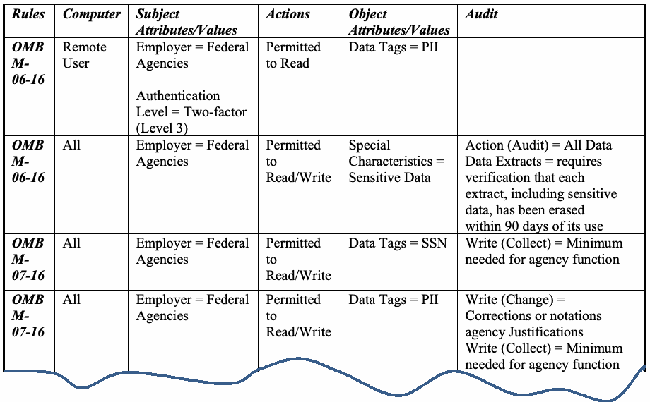
| ルール | コンピュータ | サブジェクトの属性／値 | アクション | オブジェクトの属性／値 | 監査 |
| OMB M-06-16 | リモートユーザー | 雇用者 = 連邦機関 認証レベル = 2要素（レベル 3） | 読み取り許可 | データタグ = PII | |
| OMB M-06-16 | すべて | 雇用者 = 連邦機関 | 読み取り／書き込み許可 | 特別な特性 = 機微データ | アクション（監査） = すべてのデータ データ抽出 = 機微データを含む各抽出物が、その使用から90日以内に消去されたことの検証を要求 |
| OMB M-07-16 | すべて | 雇用者 = 連邦機関 | 読み取り／書き込み許可 | データタグ = SSN | 書き込み（収集） = 機関の機能に必要な最小限 |
| OMB M-07-16 | すべて | 雇用者 = 連邦機関 | 読み取り／書き込み許可 | データタグ = PII | 書き込み（変更） = 訂正または注記、機関の正当化理由。書き込み（収集） = 機関機能に必要な最小限 |
Figure 6: Example rules from OMB M-06-16 and OMB M-07-16
図6：OMB M-06-16およびOMB M-07-16のルール例
The following examples demonstrate the mapping to concrete instances of the OMB M-06-16 privacy rule GAF shown in Figure 6. Example 1 (Table 10) is for an information sharing center (ISC) in which the local subject and object attributes are assigned based on ISC’s data formats. Example 2 (Table 11) is for a federal organization wherein the subject and object attributes originate from the Human Resources Department (HRD). These two examples show the portability property of a GAF for information systems with different domains. The “generic attributes” row refers to the generic attributes from the GAF, and the “local attributes” row shows the example system attributes that must be reviewed to decide the qualification (yes or no) of the mapped generic attributes. The GAF access control rule for the OMB M-06-16 rule is composed of all of the generic attributes in the row:
以下の例は、図6に示すOMB M-06-16プライバシールールGAFの具体的なインスタンスへのマッピングを示している。例1（表10）は、ISCのデータ形式に基づいてローカルのサブジェクト属性およびオブジェクト属性が割り当てられている情報共有センター（ISC）を対象としている。例2（表11）は、サブジェクト属性およびオブジェクト属性が人事部門（HRD）に由来する連邦組織を対象としている。これら2つの例は、異なるドメインを持つ情報システムに対するGAFの移植性の特性を示している。「汎用属性」の行はGAFの汎用属性を指し、「ローカル属性」の行は、マッピングされた汎用属性の適格性（yesまたはno）を判断するためにレビューしなければならないシステム属性の例を示している。OMB M-06-16ルールに対するGAFアクセス制御ルールは、行内のすべての汎用属性で構成される:
Grant Read access for the user who has the attributes: Remote User, Federal Agencies, and two-factor (Level 3) to the resource data with the PII attributes.
Remote User、Federal Agencies、および2要素（レベル3）の属性を持つユーザーに対し、PII属性を持つリソースデータへの読み取り（Read）アクセスを許可する。
Example 1:
例 1：
Table 10: Mapping of generic attributes of an OMB M-06-16 rule to an ISC system
表10：OMB M-06-16ルールの汎用属性のISCシステムへのマッピング
| Attributes | Subject Attributes | Actions | Object Attributes | |||
|---|---|---|---|---|---|---|
| Generic attributes | Remote Use | Federal Agencies | 2-factor - level 3 | Action | PII | PII |
| Local Attributes | <Remote login ID> | Federation ID | Electronic Identity | Read | Vehicle Year | Vehicle Registration Number |
原本PDFの抜粋画像
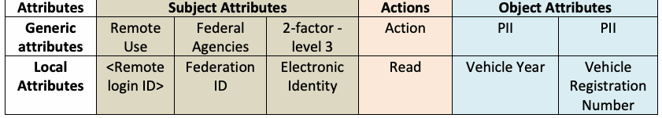
| 属性 | サブジェクト属性 | アクション | オブジェクト属性 | |||
|---|---|---|---|---|---|---|
| 汎用属性 | リモート利用 | 連邦機関 | 2要素 - レベル3 | アクション | PII | PII |
| ローカル属性 | <Remote login ID> | Federation ID | Electronic Identity | Read | Vehicle Year | Vehicle Registration Number |
Similarly, the following access control rule of the ISE can be achieved through the GAF:
同様に、ISEの以下のアクセス制御ルールは、GAFを通じて実現できる:
Grant Read access for the user who is <Remote Login ID>, has Federation ID, and Electronic ID to the resource data with the Vehicle Year and Vehicle Registration Number attribute.
<Remote Login ID>であり、Federation IDおよびElectronic IDを持つユーザーに対して、Vehicle YearおよびVehicle Registration Number属性を持つリソースデータへのReadアクセスを許可する。
Example 2:
例2:
Table 11: Mapping of generic attributes of OMB M-06-16 rules to the HRD system of a federal organization
表 11: OMB M-06-16ルールの汎用属性から連邦組織のHRDシステムへのマッピング
| Attributes | Subject Attributes | Actions | Object Attributes | ||
|---|---|---|---|---|---|
| Generic attributes | Remote User | Federal Agencies | 2-factor (level 3) | Action | PII |
| Local Attributes | <Remote Login ID> | Agency HRD ID | Remote Access key | Read | SSN |
原本PDFの抜粋画像
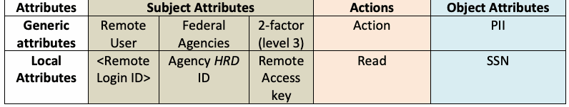
| 属性 | サブジェクト属性 | アクション | オブジェクト属性 | ||
|---|---|---|---|---|---|
| 汎用属性 | リモートユーザー | 連邦機関 | 2要素（レベル3） | アクション | PII |
| ローカル属性 | <Remote Login ID> | Agency HRD ID | Remote Access key | Read | SSN |
Similarly, the following policy rule of the HRD can be achieved through the GAF:
同様に、HRDの以下のポリシールールは、GAFを通じて実現できる:
Grant Read access for the user who is <Remote Login ID> and has HRD ID and Remote Access Key to the resource data with the SSN attribute.
<Remote Login ID>であり、HRD IDおよびRemote Access Keyを持つユーザーに対して、SSN属性を持つリソースデータへのReadアクセスを許可する。
The XACML [12] implementation of the examples above is listed in the Appendix.
上記の例のXACML [12]実装は、付録に記載されている。
Note that to ensure the robustness of the GAF, the ontologies between the generic attributes may be expanded as they pertain to identified sub-rules or hierarchical relations of rules. Also, assertion-based policy rules appear in some policies, and the handling of these features must be addressed in the development of the GAF.
GAFの堅牢性を確保するために、特定されたサブルールやルールの階層関係に関連する汎用属性間のオントロジーが拡張される場合があることに留意されたい。また、一部のポリシーにはアサーションベースのポリシールールが現れるため、GAFの開発においてはこれらの特徴の処理に対処しなければならない。
5 Attribute Evaluation Scheme
5 属性評価スキーム
An attribute evaluation scheme should be determined by the requirements and capability of an organization while also considering risk, performance, and cost. This document does not intend to construct a universal scheme that suits all business requirements and capabilities. Instead, it provides mapping examples of scheme metrics for general access control systems which can serve as prototypes that may be adapted to meet the specific needs of an organization while it defines its attribute evaluation scheme.
属性評価スキームは、リスク、パフォーマンス、およびコストも考慮しつつ、組織の要件と能力によって決定されるべきである。本書は、すべてのビジネス要件および能力に適合する普遍的なスキームを構築することを意図したものではない。その代わりに、組織が自らの属性評価スキームを定義する際に、組織の特定のニーズを満たすように適合させることができるプロトタイプとして機能しうる、一般的なアクセス制御システム向けのスキームメトリクスのマッピング例を提供する。
5.1 Attribute Evaluation Scheme Examples
5.1 属性評価スキームの例
Table 12 illustrates an example of attribute evaluation scheme categorization based on considerations from previous discussions. Note that considerations may differ between systems or organizations, depending on their security requirements. As such, they should be assigned in conformance with the organization’s operation and performance requirements and incorporated when relying on federated systems. Differences in levels between schemes should be considered for access decisions such as if an access decision uses two attributes, one in low and the other in high levels.
表12は、これまでの議論における考慮事項に基づいた属性評価スキームの分類例を示している。考慮事項は、セキュリティ要件に応じてシステム間または組織間で異なる場合があることに留意されたい。そのため、これらは組織の運用およびパフォーマンス要件に適合して割り当てられ、連携システムに依存する際に組み込まれるべきである。スキーム間のレベルの違いは、アクセス判定で2つの属性を使用し、一方が低レベルで他方が高レベルである場合など、アクセス判定において考慮されるべきである。
Table 12: Example of attribute evaluation scheme for attributes provisioned by remote access control functions or attribute providers
表12：リモートアクセス制御機能または属性プロバイダーによってプロビジョニングされる属性の属性評価スキームの例
| Level | Preparation | Veracity | Security | Readiness | Management |
| Level 1 | Attributes cover all protection policy requirements of the organization (i.e., semantically complete) | Attributes are properly verified through provision and management | Secure attribute repository; secure communication between attribute providers and access control functions | Attribute refresh frequency meets the system performance requirement | Log for attribute changes and access |
| Level 2 | Includes Level 1 preparation; attributes’ standard procedures and creation, update, and revoking policies are defined and documented | Includes Level 1 veracity; documented rule or standards for attribute value assignment and definition (syntax and semantic rule) | Includes Level 1 security; dedicated attribute repositories | Includes Level 1 readiness; attribute caching during run- time meets the system performance requirement | Includes Level 1 management; attributes integrate with authentication |
| Level 3 | Includes Level 2 preparation; attributes are under federated or unified governance | Includes Level 2 veracity; criteria that can be used to determine the trustworthiness of attributes | Includes Level 2 security; encrypted attribute values and communications between attribute providers and access control functions systems; methods for non-repudiation of attribute transmission | Includes Level 2 readiness; fail-over or back-up attributes support | N/A |
原本PDFの抜粋画像
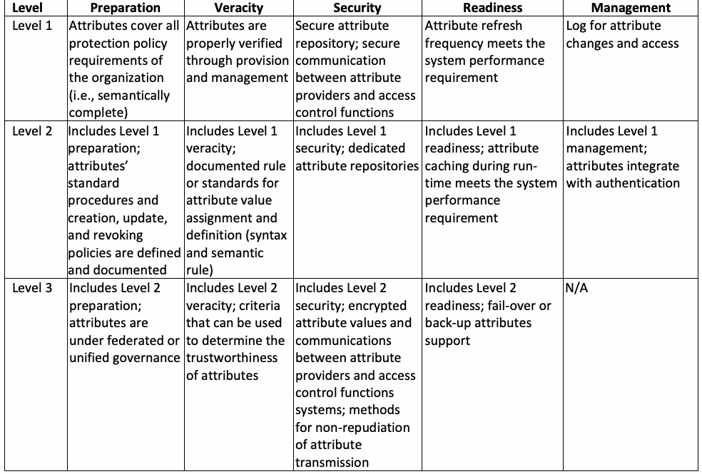
| レベル | 準備（Preparation） | 正確性（Veracity） | セキュリティ（Security） | 即応性（Readiness） | 管理（Management） |
| レベル 1 | 属性が組織のすべての保護ポリシー要件を網羅している（すなわち意味的に完全である） | 属性がプロビジョニングおよび管理を通じて適切に検証されている | セキュアな属性リポジトリ、属性プロバイダーとアクセス制御機能間のセキュアな通信 | 属性の更新頻度がシステムパフォーマンス要件を満たしている | 属性の変更およびアクセスのログ |
| レベル 2 | レベル1の準備を含む。属性の標準手順ならびに作成、更新、失効のポリシーが定義され文書化されている | レベル1の正確性を含む。属性値の割り当ておよび定義に関する文書化されたルールまたは標準（構文およびセマンティックルール） | レベル1のセキュリティを含む。専用の属性リポジトリ | レベル1の即応性を含む。実行時の属性キャッシングがシステムパフォーマンス要件を満たしている | レベル1の管理を含む。属性が認証と統合されている |
| レベル 3 | レベル2の準備を含む。属性が連携ガバナンスまたは統合ガバナンスの下にある | レベル2の正確性を含む。属性の信頼性を判断するために使用できる基準 | レベル2のセキュリティを含む。暗号化された属性値、ならびに属性プロバイダーとアクセス制御機能システム間の暗号化された通信。属性送信の否認防止のための方法 | レベル2の即応性を含む。フェイルオーバーまたはバックアップ属性のサポート | 該当なし |
| Level | Preparation | Veracity | Security | Readiness | Management |
| Level 4 | N/A | Includes Level 3 veracity; performance guidelines and specifications for remote access control function or attribute provider | Includes Level 3 security; transmission of attributes between access control functions should be protected from changing by any functions | Includes Level 3 readiness; formal rules, policies, or standards for logging the creation, updates, modification, and deletion of attributes | N/A |
原本PDFの抜粋画像
| レベル | 準備（Preparation） | 正確性（Veracity） | セキュリティ（Security） | 即応性（Readiness） | 管理（Management） |
| レベル 4 | 該当なし | レベル3の正確性を含む。リモートアクセス制御機能または属性プロバイダーのパフォーマンスガイドラインおよび仕様 | レベル3のセキュリティを含む。アクセス制御機能間での属性の送信は、いかなる機能による改ざんからも保護されるべきである | レベル3の即応性を含む。属性の作成、更新、変更、および削除のログ記録に関する正式なルール、ポリシー、または標準 | 該当なし |
Note that as the characteristics of the three attribute types—subject, object, and environment condition—vary in different operational environments, their attribute evaluation schemes may be assigned by different criteria. This allows flexibility by compositing sets of schemes that are practical for assurance measurements. For example, the attribute evaluation scheme in Table 12 can be applied to an organization whose attributes may be supplied by remote access control functions or external attribute providers. This scheme is naturally different from what would be used for organizations that do not obtain external attributes, in which case a less restrictive consideration of scheme mapping is appropriate, as illustrated in Table 13.
3つの属性タイプ（サブジェクト、オブジェクト、環境条件）の特性は運用環境ごとに異なるため、それらの属性評価スキームは異なる基準によって割り当てられる場合があることに留意されたい。これにより、保証の測定に実用的なスキームのセットを組み合わせることで柔軟性が得られる。例えば、表12の属性評価スキームは、属性がリモートアクセス制御機能または外部の属性プロバイダーから供給される可能性のある組織に適用できる。このスキームは、外部属性を取得しない組織で使用されるものとは当然異なり、その場合は表13に示すように、スキームマッピングをより制約の少ない形で検討することが適切である。
Table 13: Example of attribute evaluation scheme considerations for object attributes not provisioned by remote access control function or attribute provider
表13：リモートアクセス制御機能または属性プロバイダーによってプロビジョニングされないオブジェクト属性に関する属性評価スキームの検討例
| Level | Preparation | Veracity | Security | Readiness | Management |
| Level 1 | Attributes cover all protection policy requirements of the organization (i.e., semantically complete) | Attributes are properly verified through provision and management | Secure attribute repository | Attribute refresh frequency meets the system performance requirement; log for attribute changes and access | Log for attribute changes and access |
| Level 2 | Includes Level 1 preparation; attributes’ standard procedures and creation, update, and revoking policies are defined and documented | Includes Level 1 veracity; documented rule or standards for attribute value assignment and definition (syntax and semantic rule) | Includes Level 1 security; dedicated attribute repositories | Includes Level 1 readiness; attribute caching during run time meets the system performance requirement | Includes Level 1 management; attributes integrate with authentication |
| Level 3 | N/A | N/A | Includes Level 2 security; transmission of attributes between access control functions should be protected from changing by any functions | Includes Level 2 readiness; fail-over or back-up attributes support; formal rules, policies, or standards for logging the creation, updates, modification, and deletion of attributes | N/A |
原本PDFの抜粋画像
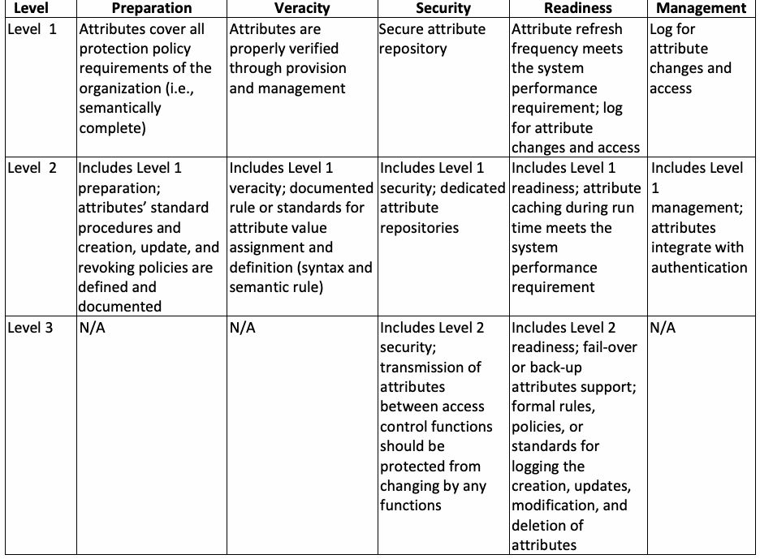
| レベル | 準備 | 正確性 | セキュリティ | 即応性 | 管理 |
| レベル 1 | 属性が組織のすべての保護ポリシー要件を網羅している（すなわち、意味的に完全である） | 属性がプロビジョニングおよび管理を通じて適切に検証されている | 安全な属性リポジトリ | 属性の更新頻度がシステムパフォーマンス要件を満たしている。属性の変更およびアクセスのログ | 属性の変更およびアクセスのログ |
| レベル 2 | レベル1の準備を含む。属性の標準手順ならびに作成、更新、失効ポリシーが定義および文書化されている | レベル1の正確性を含む。属性値の割り当ておよび定義に関する文書化されたルールまたは標準（構文および意味ルール） | レベル1のセキュリティを含む。専用の属性リポジトリ | レベル1の即応性を含む。実行時の属性キャッシングがシステムパフォーマンス要件を満たしている | レベル1の管理を含む。属性が認証と統合されている |
| レベル 3 | 該当なし | 該当なし | レベル2のセキュリティを含む。アクセス制御機能間での属性の伝送は、いかなる機能による変更からも保護されるべきである | レベル2の即応性を含む。フェイルオーバーまたはバックアップ属性のサポート。属性の作成、更新、変更、および削除をログに記録するための正式なルール、ポリシー、または標準 | 該当なし |
NISTIR 8112, Attribute Metadata: A Proposed Schema for Evaluating Federated Attributes [3], explores veracity in terms of metadata and provides a guide for establishing a scoring framework and its associated components to enable standardized attribute confidence evaluations.
NISTIR 8112『Attribute Metadata: A Proposed Schema for Evaluating Federated Attributes』[3] は、メタデータの観点から正確性を探究し、標準化された属性信頼度評価を可能にするためのスコアリングフレームワークおよびその関連コンポーネントを確立するための手引きを提供している。
5.2 Attribute Practice Statement
5.2 属性運用規程（Attribute Practice Statement）
Confidence in remote access control functions or attribute providers is gained by evaluating how secure the remote access control function or attribute provider’s internal processes and procedures are with respect to both intentional attacks and unintentional errors or failures. It is often established on unverified assertions of validity that are not based on commonly agreed-upon standards. An example document that governs the effect of operations on attribute evaluation schemes is the Attribute Practice Statement (APS), which provides a listing of the attributes that will be used throughout the enterprise and may identify authoritative attribute sources for the enterprise. Still further network infrastructure capabilities (including the ability to maintain attribute veracity, security, and readiness) are required to share and replicate authoritative subject attribute data within and across organizations. For example, an Attribute Practice Statement can be based on a trust framework, such as NISTIR 8149, Developing Trust Frameworks to Support Identity Federations [18], for establishing the attribute evaluation scheme of veracity. The act of developing an auditable statement will provide an impartial assessment of the remote access control function or attribute provider’s standards of operation as well as the confidence of the provided attribute. Thus, a higher attribute evaluation scheme level could be an APS that is audited for compliance with policy. Lower levels of an attribute evaluation scheme could apply to remote access control functions or attribute providers who self-report adherence to policy or do not publish their operation’s practices.
リモートアクセス制御機能または属性プロバイダーに対する信頼は、意図的な攻撃と意図しないエラーや障害の双方に関して、リモートアクセス制御機能または属性プロバイダーの内部プロセスおよび手順がどれほど安全であるかを評価することによって得られる。この信頼は多くの場合、一般に合意された標準に基づかない、未検証の妥当性の主張の上に確立されている。属性評価スキームに対する運用の影響を統制する文書の例としては、属性運用規程（Attribute Practice Statement: APS）があり、これはエンタープライズ全体で使用される属性のリストを提供し、エンタープライズにとっての権威ある属性ソースを特定する場合がある。組織内および組織間で権威あるサブジェクト属性データを共有および複製するには、さらなるネットワークインフラ機能（属性の正確性、セキュリティ、および即応性を維持する能力を含む）が必要である。例えば、正確性の属性評価スキームを確立するために、属性運用規程はNISTIR 8149『Developing Trust Frameworks to Support Identity Federations』[18] などのトラストフレームワークに基づくことができる。監査可能な規程を策定する行為は、リモートアクセス制御機能または属性プロバイダーの運用標準、ならびに提供される属性の信頼度に対する公平な評価をもたらす。したがって、より高い属性評価スキームレベルは、ポリシーへの準拠について監査されるAPSとなりうる。属性評価スキームのより低いレベルは、ポリシーの順守を自己申告している、あるいは運用の実践内容を公開していないリモートアクセス制御機能または属性プロバイダーに適用されうる。
6 Conclusions
6 結論
An attribute-based access control system limits access to objects by evaluating rules against the attributes of entities (i.e., subject and object), operations, and the environment relevant to an access request and relies upon a formal relationship or access control rule that defines the allowable operations for subject/object attribute combinations. This document discusses considerations for attributes from the perspectives of fundamental assurance requirements: preparation, veracity, security, readiness, and management. In addition to these considerations, a General Attribute Framework with accompanying examples is demonstrated to show the importance and efficiency of the semantic and syntactic accuracies of attributes in federated access control environments, especially when natural language policies are the initial policies. Finally, the discussed considerations are summarized to illustrate attribute evaluation scheme examples which are applied to different security requirements. Clearly, attribute evaluation scheme framework development requires additional research and stakeholder outreach to the organizations that are using an attribute-based access control system.
属性ベースのアクセス制御システムは、アクセス要求に関連するエンティティ（すなわちサブジェクトおよびオブジェクト）、操作、および環境の属性に照らしてルールを評価することによってオブジェクトへのアクセスを制限し、サブジェクト／オブジェクトの属性の組み合わせに対して許容される操作を定義する正式な関係またはアクセス制御ルールに依存する。本書では、準備（preparation）、正確性（veracity）、セキュリティ（security）、即応性（readiness）、および管理（management）という基本的な保証要件の観点から属性に関する考慮事項を論じる。これらの考慮事項に加えて、特に自然言語ポリシーが初期ポリシーである場合に、フェデレーションアクセス制御環境における属性の意味的および構文的な正確性の重要性と効率性を示すために、付随する例とともにGeneral Attribute Frameworkを実例で示す。最後に、論じた考慮事項を要約して、異なるセキュリティ要件に適用される属性評価スキームの例を示す。明らかに、属性評価スキームのフレームワーク開発には、追加の研究と、属性ベースのアクセス制御システムを使用している組織へのステークホルダーアウトリーチが必要である。
Appendix A—XACML Implementation of Table 10 and 11
付録A—表10および11のXACML実装
The Appendix lists the XACML translation of the OMB M-07-16 privacy rule [17].
本付録には、OMB M-07-16プライバシールール[17]のXACML変換を掲載する。
<?xml version="1.0" encoding="UTF-8" ?> <Policy xmlns="urn:oasis:names:tc:xacml:2.0:policy:schema:os" PolicyId="GAF--sample1" RuleCombiningAlgId="urn:oasis:names:tc:xacml:1.0:rule-combining-algorithm:deny-overrides"> <Description>XACML sample for generic attributes of an OMB M-06-16 privacy rule</Description> <Target /> <Rule Effect="Permit" RuleId="OMB M-06-16 Privacy rule"> -<Description>Grant Read access for the user who has the attributes: Remote User, Federal Agencies, and 2- factor (Level 3) to the resource data with the PII attributes.</Description> <Target> -<Subjects>-<Subject> -<SubjectMatch MatchId="urn:oasis:names:tc:xacml:1.0:function:boolean-equal"> -<AttributeValue DataType="http://www.w3.org/2001/XMLSchema#boolean">True</AttributeValue > <SubjectAttributeDesignator AttributeId=""Remote Login ID"" DataType="http://www.w3.org/2001/XMLSchema#boolean" MustBePresent="true" /> </SubjectMatch> <SubjectMatch MatchId="urn:oasis:names:tc:xacml:1.0:function:boolean-equal">-<AttributeValue DataType="http://www.w3.org/2001/XMLSchema#boolean">True</AttributeValue > <SubjectAttributeDesignator AttributeId=""Federal Agency"" DataType="http://www.w3.org/2001/XMLSchema#boolean" MustBePresent="true" /> </SubjectMatch> <SubjectMatch MatchId="urn:oasis:names:tc:xacml:1.0:function:boolean-equal"> -<AttributeValue DataType="http://www.w3.org/2001/XMLSchema#boolean">True</AttributeValue > <SubjectAttributeDesignator AttributeId=""2- factor (Level 3)"" DataType="http://www.w3.org/2001/XMLSchema#boolean" MustBePresent="true" /> </SubjectMatch> </Subject> </Subjects> <Resources> -<Resource> -<ResourceMatch MatchId="urn:oasis:names:tc:xacml:1.0:function:boolean-equal"> -<AttributeValue DataType="http://www.w3.org/2001/XMLSchema#boolean">True</AttributeValue >
<?xml version="1.0" encoding="UTF-8" ?> <Policy xmlns="urn:oasis:names:tc:xacml:2.0:policy:schema:os" PolicyId="GAF--sample1" RuleCombiningAlgId="urn:oasis:names:tc:xacml:1.0:rule-combining-algorithm:deny-overrides"> <Description>XACML sample for generic attributes of an OMB M-06-16 privacy rule</Description> <Target /> <Rule Effect="Permit" RuleId="OMB M-06-16 Privacy rule"> -<Description>Grant Read access for the user who has the attributes: Remote User, Federal Agencies, and 2- factor (Level 3) to the resource data with the PII attributes.</Description> <Target> -<Subjects>-<Subject> -<SubjectMatch MatchId="urn:oasis:names:tc:xacml:1.0:function:boolean-equal"> -<AttributeValue DataType="http://www.w3.org/2001/XMLSchema#boolean">True</AttributeValue > <SubjectAttributeDesignator AttributeId=""Remote Login ID"" DataType="http://www.w3.org/2001/XMLSchema#boolean" MustBePresent="true" /> </SubjectMatch> <SubjectMatch MatchId="urn:oasis:names:tc:xacml:1.0:function:boolean-equal">-<AttributeValue DataType="http://www.w3.org/2001/XMLSchema#boolean">True</AttributeValue > <SubjectAttributeDesignator AttributeId=""Federal Agency"" DataType="http://www.w3.org/2001/XMLSchema#boolean" MustBePresent="true" /> </SubjectMatch> <SubjectMatch MatchId="urn:oasis:names:tc:xacml:1.0:function:boolean-equal"> -<AttributeValue DataType="http://www.w3.org/2001/XMLSchema#boolean">True</AttributeValue > <SubjectAttributeDesignator AttributeId=""2- factor (Level 3)"" DataType="http://www.w3.org/2001/XMLSchema#boolean" MustBePresent="true" /> </SubjectMatch> </Subject> </Subjects> <Resources> -<Resource> -<ResourceMatch MatchId="urn:oasis:names:tc:xacml:1.0:function:boolean-equal"> -<AttributeValue DataType="http://www.w3.org/2001/XMLSchema#boolean">True</AttributeValue >
<ResourceAttributeDesignator AttributeId=""PII"" DataType="http://www.w3.org/2001/XMLSchema#boolean" MustBePresent="true" /> </ResourceMatch> </Resource> </Resources> <Actions> -<Action> -<ActionMatch MatchId="urn:oasis:names:tc:xacml:1.0:function:string-equal"> -<AttributeValue DataType="http://www.w3.org/2001/XMLSchema#string">Read</AttributeValue> <ActionAttributeDesignator AttributeId="urn:oasis:names:tc:xacml:1.0:action:action-id" DataType="http://www.w3.org/2001/XMLSchema#string" MustBePresent="true" /> </ActionMatch> </Action> </Actions> </Target> </Rule> </Policy>
<ResourceAttributeDesignator AttributeId=""PII"" DataType="http://www.w3.org/2001/XMLSchema#boolean" MustBePresent="true" /> </ResourceMatch> </Resource> </Resources> <Actions> -<Action> -<ActionMatch MatchId="urn:oasis:names:tc:xacml:1.0:function:string-equal"> -<AttributeValue DataType="http://www.w3.org/2001/XMLSchema#string">Read</AttributeValue> <ActionAttributeDesignator AttributeId="urn:oasis:names:tc:xacml:1.0:action:action-id" DataType="http://www.w3.org/2001/XMLSchema#string" MustBePresent="true" /> </ActionMatch> </Action> </Actions> </Target> </Rule> </Policy>
Appendix B—References
付録B—参考文献
[1] Hu VC, Ferraiolo DF, Kuhn R, Schnitzer A, Sandlin K, Miller R, Scarfone KA (2014) Guide to Attribute Based Access Control (ABAC) Definition and Considerations. (National Institute of Standards and Technology, Gaithersburg, MD), NIST Special Publication (SP) 800-162, Includes updates as of February 25, 2019.
[1] Hu VC, Ferraiolo DF, Kuhn R, Schnitzer A, Sandlin K, Miller R, Scarfone KA (2014) Guide to Attribute Based Access Control (ABAC) Definition and Considerations. (National Institute of Standards and Technology, Gaithersburg, MD), NIST Special Publication (SP) 800-162, Includes updates as of February 25, 2019.
https://doi.org/10.6028/NIST.SP.800-162
https://doi.org/10.6028/NIST.SP.800-162
[2] InterNational Committee for Information Technology Standards (INCITS) (2018) Information technology – Next Generation Access Control – Functional Architecture (NGAC-FA). (INCITS, Washington, DC), INCITS 499-2018.
[2] InterNational Committee for Information Technology Standards (INCITS) (2018) Information technology – Next Generation Access Control – Functional Architecture (NGAC-FA). (INCITS, Washington, DC), INCITS 499-2018.
https://webstore.ansi.org/Standards/INCITS/INCITS4992018
https://webstore.ansi.org/Standards/INCITS/INCITS4992018
[3] Grassi PA, Lefkovitz NB, Nadeau EM, Galluzzo RJ, Dinh AT (2018) Attribute Metadata: A Proposed Schema for Evaluating Federated Attributes. (National Institute of Standards and Technology, Gaithersburg, MD), NIST Interagency or Internal Report (NISTIR) 8112.
[3] Grassi PA, Lefkovitz NB, Nadeau EM, Galluzzo RJ, Dinh AT (2018) Attribute Metadata: A Proposed Schema for Evaluating Federated Attributes. (National Institute of Standards and Technology, Gaithersburg, MD), NIST Interagency or Internal Report (NISTIR) 8112.
https://doi.org/10.6028/NIST.IR.8112
https://doi.org/10.6028/NIST.IR.8112
[4] Hu VC, Ferraiolo, DF, Kuhn DR (2006) Assessment of Access Control Systems. (National Institute of Standards and Technology, Gaithersburg, MD), NIST Interagency or Internal Report (NISTIR) 7316. https://doi.org/10.6028/NIST.IR.7316
[4] Hu VC, Ferraiolo, DF, Kuhn DR (2006) Assessment of Access Control Systems. (National Institute of Standards and Technology, Gaithersburg, MD), NIST Interagency or Internal Report (NISTIR) 7316. https://doi.org/10.6028/NIST.IR.7316
[5] Hu VC, Scarfone K (2012) Guidelines for Access Control System Evaluation Metrics. (National Institute of Standards and Technology, Gaithersburg, MD), NIST Interagency or Internal Report (NISTIR) 7874. https://doi.org/10.6028/NIST.IR.7874
[5] Hu VC, Scarfone K (2012) Guidelines for Access Control System Evaluation Metrics. (National Institute of Standards and Technology, Gaithersburg, MD), NIST Interagency or Internal Report (NISTIR) 7874. https://doi.org/10.6028/NIST.IR.7874
[6] Ferraiolo DF, Hu VC, Kuhn R, Chandramouli R (2016) A Comparison of Attribute Based Access Control (ABAC) Standards for Data Service Applications: Extensible Access Control Markup Language (XACML) and Next Generation Access Control (NGAC). (National Institute of Standards and Technology, Gaithersburg, MD), NIST Special Publication (SP) 800-178. https://doi.org/10.6028/NIST.SP.800-178
[6] Ferraiolo DF, Hu VC, Kuhn R, Chandramouli R (2016) A Comparison of Attribute Based Access Control (ABAC) Standards for Data Service Applications: Extensible Access Control Markup Language (XACML) and Next Generation Access Control (NGAC). (National Institute of Standards and Technology, Gaithersburg, MD), NIST Special Publication (SP) 800-178. https://doi.org/10.6028/NIST.SP.800-178
[7] Office of Management and Budget (2003) E-Authentication Guidance for Federal Agencies. (The White House, Washington, DC), OMB Memorandum M-04-04, December 16, 2003. Available at https://www.whitehouse.gov/sites/whitehouse.gov/files/omb/memoranda/2004/m04-04.pdf
[7] 行政管理予算局 (Office of Management and Budget) (2003) E-Authentication Guidance for Federal Agencies. (The White House, Washington, DC), OMB Memorandum M-04-04, December 16, 2003. 次より入手可能: https://www.whitehouse.gov/sites/whitehouse.gov/files/omb/memoranda/2004/m04-04.pdf
[8] Global Justice Information Sharing Initiative (Global) Security Working Group (2008) Global Federated Identity and Privilege Management (GFIPM) Metadata Overview Version 1.0. (U.S. Department of Justice, Washington, DC). Available at https://it.ojp.gov/document-library
[8] Global Justice Information Sharing Initiative (Global) Security Working Group (2008) Global Federated Identity and Privilege Management (GFIPM) Metadata Overview Version 1.0. (U.S. Department of Justice, Washington, DC). 次より入手可能: https://it.ojp.gov/document-library
[9] National Identity Exchange Federation (NIEF) (2019) NIEF Attribute Repository.
[9] National Identity Exchange Federation (NIEF) (2019) NIEF Attribute Repository.
Available at https://nief.org/attribute-registry/index.html
https://nief.org/attribute-registry/index.html より入手可能
[10] OASIS (2019) OASIS Security Services (SAML) TC. Available at https://www.oasis-open.org/committees/tc_home.php?wg_abbrev=security
[10] OASIS (2019) OASIS Security Services (SAML) TC. 次より入手可能: https://www.oasis-open.org/committees/tc_home.php?wg_abbrev=security
[11] Dierks T, Rescorla E (2018) The Transport Layer Security (TLS) Protocol Version 1.3. (Internet Engineering Task Force), IETF Request for Comments (RFC) 8446. https://doi.org/10.17487/RFC8446
[11] Dierks T, Rescorla E (2018) The Transport Layer Security (TLS) Protocol Version 1.3. (Internet Engineering Task Force), IETF Request for Comments (RFC) 8446. https://doi.org/10.17487/RFC8446
[12] Organization for the Advancement of Structured Information Standards (OASIS) (2019) OASIS eXtensible Access Control Markup Language (XACML) TC. Available at https://www.oasis-open.org/committees/xacml/
[12] Organization for the Advancement of Structured Information Standards (OASIS) (2019) OASIS eXtensible Access Control Markup Language (XACML) TC. 次より入手可能: https://www.oasis-open.org/committees/xacml/
[13] Bhatt S, Patwa F, Sandhu R (2017) ABAC with Group Attributes and Attribute Hierarchies Utilizing the Policy Machine. Proceedings of the 2nd ACM Workshop on Attribute Based Access Control (ABAC 2017), (ACM, Scottsdale, AZ), pp 17-28.
[13] Bhatt S, Patwa F, Sandhu R (2017) ABAC with Group Attributes and Attribute Hierarchies Utilizing the Policy Machine. Proceedings of the 2nd ACM Workshop on Attribute Based Access Control (ABAC 2017), (ACM, Scottsdale, AZ), pp 17-28.
https://doi.org/10.1145/3041048.3041053
https://doi.org/10.1145/3041048.3041053
[14] Biswas P, Sandhu R, Krishnan R (2017) Attribute Transformation for Attribute-Based Access Control. Proceedings of the 2nd ACM Workshop on Attribute-Based Access Control (ABAC 2017), (ACM, Scottsdale, AZ), pp 1-8.
[14] Biswas P, Sandhu R, Krishnan R (2017) Attribute Transformation for Attribute-Based Access Control. Proceedings of the 2nd ACM Workshop on Attribute-Based Access Control (ABAC 2017), (ACM, Scottsdale, AZ), pp 1-8.
https://doi.org/10.1145/3041048.3041052
https://doi.org/10.1145/3041048.3041052
[15] Hindle A (2014) Authentication vs. Authorization – Part 1: Federated Authentication. (Axiomatics). Available at https://www.axiomatics.com/blog/authentication-vs-authorization-part-1-federated-authentication-2/
[15] Hindle A (2014) Authentication vs. Authorization – Part 1: Federated Authentication. (Axiomatics). 次より入手可能: https://www.axiomatics.com/blog/authentication-vs-authorization-part-1-federated-authentication-2/
[16] Office of Management and Budget (2006) Protection of Sensitive Agency Information. (The White House, Washington, DC), OMB Memorandum M-06-16, June 23, 2006.
[16] 行政管理予算局 (Office of Management and Budget) (2006) Protection of Sensitive Agency Information. (The White House, Washington, DC), OMB Memorandum M-06-16, June 23, 2006.
Available at https://www.whitehouse.gov/sites/whitehouse.gov/files/omb/memoranda/2006/m06-16.pdf
https://www.whitehouse.gov/sites/whitehouse.gov/files/omb/memoranda/2006/m06-16.pdf で入手可能
[17] Office of Management and Budget (2007) Safeguarding Against and Responding to the Breach of Personally Identifiable Information. (The White House, Washington, DC), OMB Memorandum M-07-16, May 22, 2007. Available at https://www.whitehouse.gov/sites/whitehouse.gov/files/omb/memoranda/2007/m07-16.pdf
[17] 行政管理予算局 (Office of Management and Budget) (2007) Safeguarding Against and Responding to the Breach of Personally Identifiable Information. (The White House, Washington, DC), OMB Memorandum M-07-16, May 22, 2007. 次より入手可能: https://www.whitehouse.gov/sites/whitehouse.gov/files/omb/memoranda/2007/m07-16.pdf
[18] Temoshok D, Abruzzi C (2018) Developing Trust Frameworks to Support Identity Federations. (National Institute of Standards and Technology, Gaithersburg, MD), NIST Interagency or Internal Report (NISTIR) 8149. https://doi.org/10.6028/NIST.IR.8149
[18] Temoshok D, Abruzzi C (2018) Developing Trust Frameworks to Support Identity Federations. (National Institute of Standards and Technology, Gaithersburg, MD), NIST Interagency or Internal Report (NISTIR) 8149. https://doi.org/10.6028/NIST.IR.8149